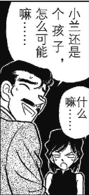
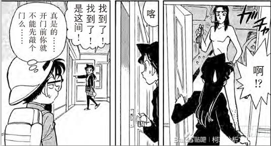

按照吧友的建议，暴论要放在前面，才能吸引大家往下看。
所以先上暴论：
1、新兰同样是“恋爱推理”的一部分，且新兰的恋爱推理远在灰原哀出场之前就开始了（除非你认为青山刚昌用心写柯哀用脚写新兰）
2、新兰是在工藤新一变成江户川柯南也就是“失踪”以后才真正开始谈恋爱的，在此之前只是普通的互有好感，没有多深的感情基础（除非你认可毛利兰见谁爱谁）
3、毛利兰不是按照二次元角色而是按照三次元人物来刻画的，不具备二次元角色非黑即白、具备极致单纯特性的特点。毛利兰有小心思但没有坏心眼，不能用简单的善恶予以评价（除非你认为毛利兰属于天然茶）
4、作为三次元人物，毛利兰会说谎，并且擅长利用沉默制造“误会”，达到说谎的目标的同时自己并没有做出“说谎”的行为。目前，工藤新一是她这一习惯的最主要的受害者
5、绝大部分时间里，毛利兰没有多喜欢工藤新一，而工藤新一对毛利兰也不是喜欢而是执着。新兰起于误解，成于巧合。因此，新兰本质上不存在。
6、毛利兰对“谈恋爱”的理解非常肤浅，只停留在形式上而忽视了最重要的“彼此的心意”，因此，她会通过参考其他CP（平和，柯哀）的行为来决定自己的行为，做出一些离谱到啼笑皆非的行为；会以大众认知的形式谈恋爱，只将达到某个节点作为胜利的标志。 久违的约法三章
1、楼主对毛利兰这个角色颇有好感。为避免沟通不畅，本楼禁止使用“角”等争议性称呼。请尽可能使用“兰”、“毛利兰”等正确的称呼
2、楼主信奉“粉丝行为不上升角色”，本楼不讨论任何有关兰粉、新兰粉的话题。
3、楼主信奉“角色降智上升作者”，对于角色的降智行为，优先考虑是否符合剧情逻辑，如果不符合，优先骂作者。
4、楼主是和平主义者，不爱对线，本帖仅供大家了解剧情、讨论剧情。
所以先上暴论：
1、新兰同样是“恋爱推理”的一部分，且新兰的恋爱推理远在灰原哀出场之前就开始了（除非你认为青山刚昌用心写柯哀用脚写新兰）
2、新兰是在工藤新一变成江户川柯南也就是“失踪”以后才真正开始谈恋爱的，在此之前只是普通的互有好感，没有多深的感情基础（除非你认可毛利兰见谁爱谁）
3、毛利兰不是按照二次元角色而是按照三次元人物来刻画的，不具备二次元角色非黑即白、具备极致单纯特性的特点。毛利兰有小心思但没有坏心眼，不能用简单的善恶予以评价（除非你认为毛利兰属于天然茶）
4、作为三次元人物，毛利兰会说谎，并且擅长利用沉默制造“误会”，达到说谎的目标的同时自己并没有做出“说谎”的行为。目前，工藤新一是她这一习惯的最主要的受害者
5、绝大部分时间里，毛利兰没有多喜欢工藤新一，而工藤新一对毛利兰也不是喜欢而是执着。新兰起于误解，成于巧合。因此，新兰本质上不存在。
6、毛利兰对“谈恋爱”的理解非常肤浅，只停留在形式上而忽视了最重要的“彼此的心意”，因此，她会通过参考其他CP（平和，柯哀）的行为来决定自己的行为，做出一些离谱到啼笑皆非的行为；会以大众认知的形式谈恋爱，只将达到某个节点作为胜利的标志。 久违的约法三章
1、楼主对毛利兰这个角色颇有好感。为避免沟通不畅，本楼禁止使用“角”等争议性称呼。请尽可能使用“兰”、“毛利兰”等正确的称呼
2、楼主信奉“粉丝行为不上升角色”，本楼不讨论任何有关兰粉、新兰粉的话题。
3、楼主信奉“角色降智上升作者”，对于角色的降智行为，优先考虑是否符合剧情逻辑，如果不符合，优先骂作者。
4、楼主是和平主义者，不爱对线，本帖仅供大家了解剧情、讨论剧情。
二楼留给我自己。
虽然其实还没有完稿但我真的写不下去了。再不让我这个话唠跟大家交流我就要疯了！
虽然其实还没有完稿但我真的写不下去了。再不让我这个话唠跟大家交流我就要疯了！
大致会涉及以下内容：
1、毛利兰的核心设定——不讲逻辑、不能预测
2、毛利兰的隐藏设定——假传圣旨
3、新兰恋爱推理的前期内容——毛利兰说自己喜欢工藤新一，是真的吗
4、新兰恋爱推理的后期内容——毛利兰如何通过观察平和和柯哀来学习谈恋爱
5、为什么说工藤新一对毛利兰不是喜欢而是执着
当然，也可能会不止这些内容，或者是写着写着就忘掉了也说不定
1、毛利兰的核心设定——不讲逻辑、不能预测
2、毛利兰的隐藏设定——假传圣旨
3、新兰恋爱推理的前期内容——毛利兰说自己喜欢工藤新一，是真的吗
4、新兰恋爱推理的后期内容——毛利兰如何通过观察平和和柯哀来学习谈恋爱
5、为什么说工藤新一对毛利兰不是喜欢而是执着
当然，也可能会不止这些内容，或者是写着写着就忘掉了也说不定
关于毛利兰的性格：
青山刚昌曾经说过，“兰和哀是相反的人”。大家据此找出了两人很多不同之处，但回到福尔摩斯的世界，既然哀的原型是艾琳艾得勒，也就是“那个女人”，那么兰当然就是“其他女人”。
当然，福尔摩斯世界有许多性格各异的女性，温柔的、高贵的、坚强的、执着的，不一而足。但是，至少在遇到艾琳艾得勒之前，福尔摩斯对大部分女人存在着某种偏见，比如说：
“不要告诉她们太多，即使是最好的女人，也决不能完全信赖她们。” ——《四签名》
（柯南说的自己最喜欢的一部作品，他不信赖毛利兰。结果后面完全的信赖了灰原哀，只能说是第N次的回旋镖）
“妇女们的心理活动是很难猜测的……有时她们一个细小的举动包含了很大的意义，一个发针或一把卷发火剪就可以显露出她们的反常。”——《威斯敏斯特教堂谋杀案》
“女人的心理对男人来说是不可思议的谜。杀人罪也许可以得到宽宥或辩解，但小小的冒犯也许会刺到痛处。”——《显贵的主顾》
（同样，这也是miss mystery里那句强行加的台词的来源，结合这首歌被送给了毛利兰，只能说动画组绝对有兰黑内鬼）
这暗示了福尔摩斯对“其他女人”的普遍看法：缺少逻辑、不分轻重、不可信任。诚然，其中隐含了维多利亚时期社会对女性的普遍轻视，但毛利兰的确是以这些描述为蓝本塑造出来的，因此可以说，毛利兰的确是大男子主义的产物。但另一方面，毛利兰也是名柯中唯一有着这样性格的女性，其不成熟的行为整体而言是被批判的、是作者并不赞成的。因此，与其说毛利兰是大男子主义的产物，不如说是批判大男子主义的产物。
从以上几点可以看出，这是青山刚昌塑造毛利兰的核心思路：
1、不能保密、不可信赖。这一点已经通过许多人物的口反反复复强调了，也是身份梗的源头之一。
2、情绪反应异于常理。例如对江户川柯南影响极大的月光案，包括很多悲剧的、惨痛的案子，都对毛利兰几乎没有造成任何影响（这无法以单元剧来解释，因为即使在同一案件的结尾她也仍然谈笑风生）。但也会因为一些小事而情绪激动、大发雷霆，例如因为工藤新一而做出许多不合常理的事情。
3、会因为一些小事做出出乎预料的举动。比如多次在看到工藤新一情绪激动的情况下试图冒险横穿马路。
4、思考方式难以预测。例如宫野明美案件中，柯南和毛利小五郎都认为她还在思考宫野明美的事情，但实际上她只是在关注窗外的人。多次在破案现场与其他人思维完全不在一条线上也是如此。
可以说，“不讲逻辑”才是塑造毛利兰的核心要素。与之相比，爱不爱冒险、怕不怕鬼，都不过是皮毛而已。
青山刚昌曾经说过，“兰和哀是相反的人”。大家据此找出了两人很多不同之处，但回到福尔摩斯的世界，既然哀的原型是艾琳艾得勒，也就是“那个女人”，那么兰当然就是“其他女人”。
当然，福尔摩斯世界有许多性格各异的女性，温柔的、高贵的、坚强的、执着的，不一而足。但是，至少在遇到艾琳艾得勒之前，福尔摩斯对大部分女人存在着某种偏见，比如说：
“不要告诉她们太多，即使是最好的女人，也决不能完全信赖她们。” ——《四签名》
（柯南说的自己最喜欢的一部作品，他不信赖毛利兰。结果后面完全的信赖了灰原哀，只能说是第N次的回旋镖）
“妇女们的心理活动是很难猜测的……有时她们一个细小的举动包含了很大的意义，一个发针或一把卷发火剪就可以显露出她们的反常。”——《威斯敏斯特教堂谋杀案》
“女人的心理对男人来说是不可思议的谜。杀人罪也许可以得到宽宥或辩解，但小小的冒犯也许会刺到痛处。”——《显贵的主顾》
（同样，这也是miss mystery里那句强行加的台词的来源，结合这首歌被送给了毛利兰，只能说动画组绝对有兰黑内鬼）
这暗示了福尔摩斯对“其他女人”的普遍看法：缺少逻辑、不分轻重、不可信任。诚然，其中隐含了维多利亚时期社会对女性的普遍轻视，但毛利兰的确是以这些描述为蓝本塑造出来的，因此可以说，毛利兰的确是大男子主义的产物。但另一方面，毛利兰也是名柯中唯一有着这样性格的女性，其不成熟的行为整体而言是被批判的、是作者并不赞成的。因此，与其说毛利兰是大男子主义的产物，不如说是批判大男子主义的产物。
从以上几点可以看出，这是青山刚昌塑造毛利兰的核心思路：
1、不能保密、不可信赖。这一点已经通过许多人物的口反反复复强调了，也是身份梗的源头之一。
2、情绪反应异于常理。例如对江户川柯南影响极大的月光案，包括很多悲剧的、惨痛的案子，都对毛利兰几乎没有造成任何影响（这无法以单元剧来解释，因为即使在同一案件的结尾她也仍然谈笑风生）。但也会因为一些小事而情绪激动、大发雷霆，例如因为工藤新一而做出许多不合常理的事情。
3、会因为一些小事做出出乎预料的举动。比如多次在看到工藤新一情绪激动的情况下试图冒险横穿马路。
4、思考方式难以预测。例如宫野明美案件中，柯南和毛利小五郎都认为她还在思考宫野明美的事情，但实际上她只是在关注窗外的人。多次在破案现场与其他人思维完全不在一条线上也是如此。
可以说，“不讲逻辑”才是塑造毛利兰的核心要素。与之相比，爱不爱冒险、怕不怕鬼，都不过是皮毛而已。
2023-09-24 21:29 | 睡得早也困✨:缺少逻辑，不分轻重，不可信任（）概括的太好了！兰给人的整体性格呈现是这样的！2023-09-27 12:17 | 婧er倪:这个性格评价的确定很准确2023-11-07 08:44 | neon年年:第一段直接笑喷，因为哀是the woman，所以兰是other woman 笑死了2024-01-28 19:28 | 我有嘉賓00:回复 neon年年 :这很逻辑学
但也正是如此，毛利兰才显得像一个三次元人物，而不像一个二次元的纸片人。
我们常常说小说讲逻辑，现实不讲逻辑，这是因为纸片人大部分有“设定”，目标明确、行为习惯固定，是明确的目标导向型人物，创作者只是为他们设定了互相冲突的目标和高低不同的实现自己目标的能力而已。
但现实中的人不是，现实中的人没有那么理性，往往是情绪驱动型的，情绪一上头，目标什么的全都被抛在脑后了。而毛利兰就是一个典型的情绪驱动型人物，只要情绪上来了，什么都不管不顾，之前说过的话做过的决定都不重要，她已经被自己的情绪操控了。
因此，在分析毛利兰“为什么要这样做”的时候，应当优先考虑她此时的情绪，而不是考虑她此时的处境。
特别要提醒一点的是，成功塑造一个“讨人厌”的角色也是一种成功。李雪健饰演的宋江投降后，甚至遭到老家民众的“围攻”，这正是证明了他作为演员的成功。
毛利兰不讨人喜欢的地方很多与日本社会文化息息相关，外加翻译过程中语言信息的缺失，中国观众相比之下不那么容易感受到毛利兰令人讨厌的一面，这是再正常不过的。
举个例子。如果我刻画毛利兰在一楼开着扩音器跳广场舞、跑到伦敦在纽约桥写下“到此一游”，日本观众可能会觉得“啊这是个青春活力女高啊”，而中国观众则会非常敏感的感受到作者的恶意。与之类似，中国观众对在马路上乱跑、不打招呼就进门并不是那么敏感，而这则是日本人深恶痛绝的。
我们常常说小说讲逻辑，现实不讲逻辑，这是因为纸片人大部分有“设定”，目标明确、行为习惯固定，是明确的目标导向型人物，创作者只是为他们设定了互相冲突的目标和高低不同的实现自己目标的能力而已。
但现实中的人不是，现实中的人没有那么理性，往往是情绪驱动型的，情绪一上头，目标什么的全都被抛在脑后了。而毛利兰就是一个典型的情绪驱动型人物，只要情绪上来了，什么都不管不顾，之前说过的话做过的决定都不重要，她已经被自己的情绪操控了。
因此，在分析毛利兰“为什么要这样做”的时候，应当优先考虑她此时的情绪，而不是考虑她此时的处境。
特别要提醒一点的是，成功塑造一个“讨人厌”的角色也是一种成功。李雪健饰演的宋江投降后，甚至遭到老家民众的“围攻”，这正是证明了他作为演员的成功。
毛利兰不讨人喜欢的地方很多与日本社会文化息息相关，外加翻译过程中语言信息的缺失，中国观众相比之下不那么容易感受到毛利兰令人讨厌的一面，这是再正常不过的。
举个例子。如果我刻画毛利兰在一楼开着扩音器跳广场舞、跑到伦敦在纽约桥写下“到此一游”，日本观众可能会觉得“啊这是个青春活力女高啊”，而中国观众则会非常敏感的感受到作者的恶意。与之类似，中国观众对在马路上乱跑、不打招呼就进门并不是那么敏感，而这则是日本人深恶痛绝的。
2023-09-24 11:34 | 贴吧用户_a63DD4G:2023-09-25 00:31 | 贴吧用户_0EW52AE:最后这两个例子神了2023-09-26 23:32 | 奥斯丁格理芬:
新兰be吧吧主的含金量
2023-10-03 09:29 | 礼苌:这是以前的新兰分析文吧吧主吗？2023-11-25 02:19 | 瑀珊0209:回复 礼苌 :新兰be吧的吧主2024-01-07 09:10 | 贴吧用户_G3KaeGP:我去哈哈哈

在明确毛利兰的性格之后，我们才有据可依，可以开始新兰的恋爱推理。
新兰的恋爱推理，核心切入点是江户川柯南的这句“这家伙真的在关心我吗？” 如果更深入一些，就是第一话毛利兰所说的“最喜欢新一了！” 如果更深入一些，就是工藤新一对毛利兰到底抱持有什么样的感情。
因此，在推理之中，我们时刻要思考这三个问题：
1、毛利兰真的在担心工藤新一吗？
2、毛利兰真的喜欢工藤新一吗？或者说，有多喜欢？
3、工藤新一真的喜欢毛利兰吗？或者说，是哪种喜欢？
然而，如果对毛利兰本人的性格特征不甚了解，或者是对新兰关系的起点存在误判，那我们会从分析的起点开始就出现偏差，以至于差之毫厘、谬之千里。
所以，我们先来讨论第一个问题：毛利兰的陈述是可信的吗？
新兰的恋爱推理，核心切入点是江户川柯南的这句“这家伙真的在关心我吗？” 如果更深入一些，就是第一话毛利兰所说的“最喜欢新一了！” 如果更深入一些，就是工藤新一对毛利兰到底抱持有什么样的感情。
因此，在推理之中，我们时刻要思考这三个问题：
1、毛利兰真的在担心工藤新一吗？
2、毛利兰真的喜欢工藤新一吗？或者说，有多喜欢？
3、工藤新一真的喜欢毛利兰吗？或者说，是哪种喜欢？
然而，如果对毛利兰本人的性格特征不甚了解，或者是对新兰关系的起点存在误判，那我们会从分析的起点开始就出现偏差，以至于差之毫厘、谬之千里。
所以，我们先来讨论第一个问题：毛利兰的陈述是可信的吗？
好像赶上直播了。好分析，收藏了慢慢看
很长一段时间以来，大家习惯于将毛利兰视作一个【绝对单纯、完全无知、有啥说啥】的人，并没有考虑过她的陈述存在【含糊其辞、模棱两可】或是【夸大事实、避重就轻】的可能。
对此，在最新的漫画中，失去耐心的作者直接点出了毛利兰“假传圣旨”的行为。
而文吧也有分析指出，毛利兰在修学旅行中看冲田总司护身符的行为与她所说的“不小心”很可能并不一致。
https://tieba.baidu.com/p/8560864102?share=9105&fr=sharewise&see_lz=0&share_from=post&sfc=copy&client_type=2&client_version=12.45.7.0&st=1692539628&is_video=false&unique=5FF6F3BC968D58A517EEB7F0EE61EA5A
同样，凉城小乔的视频中也指出，毛利兰的很多行为是带有一些“女孩子的小心机”的。比如很想参加聚会却不好意思明说，于是以“露出渴望的表情”的方式来让对方主动提出带自己一起。不过，可能是我对纸片人比较宽容，我认为这整体而言是无伤大雅的。
https://www.bilibili.com/video/BV1su4y1i7ro/?spm_id_from=333.337.search-card.all.click&vd_source=1c8be5e0217d235e315080d14cf39ba8
对此，在最新的漫画中，失去耐心的作者直接点出了毛利兰“假传圣旨”的行为。
而文吧也有分析指出，毛利兰在修学旅行中看冲田总司护身符的行为与她所说的“不小心”很可能并不一致。
https://tieba.baidu.com/p/8560864102?share=9105&fr=sharewise&see_lz=0&share_from=post&sfc=copy&client_type=2&client_version=12.45.7.0&st=1692539628&is_video=false&unique=5FF6F3BC968D58A517EEB7F0EE61EA5A
同样，凉城小乔的视频中也指出，毛利兰的很多行为是带有一些“女孩子的小心机”的。比如很想参加聚会却不好意思明说，于是以“露出渴望的表情”的方式来让对方主动提出带自己一起。不过，可能是我对纸片人比较宽容，我认为这整体而言是无伤大雅的。
https://www.bilibili.com/video/BV1su4y1i7ro/?spm_id_from=333.337.search-card.all.click&vd_source=1c8be5e0217d235e315080d14cf39ba8
cy
当然，我们前面提到过，毛利兰本质上是一个三次元人物。
在三次元，绝对诚实的人并不存在，我们每个人都处于或好或坏的目的，说过一些可能无伤大雅的“谎言”，因此，我并不认为“女孩子的小心机”是什么特别值得指责的事情，反而觉得这样的毛利兰比起普遍认知中的“泥雕塑”要更加的生动活泼。
因此，需要强调的是，我们在分析的时候，不能简单的把毛利兰当成一个（二次元相对比较常见的）“单纯无知的纯白天使”来看待，而应当当成一个【三次元的普通高中女生】，具体来说：
会撒谎，但也会为谎言而羞愧，所以更愿意用含糊其辞的方式让人误解；
会用“女孩子的小心思”让好朋友带自己出去玩，但并不愿意友谊直接涉及到金钱；
喜欢帅哥，但不想主动；
对喜欢的人确实喜欢，但这喜欢也不会太坚定；
会说好听的话，但做的事一般没有说的话那么漂亮。
在三次元，绝对诚实的人并不存在，我们每个人都处于或好或坏的目的，说过一些可能无伤大雅的“谎言”，因此，我并不认为“女孩子的小心机”是什么特别值得指责的事情，反而觉得这样的毛利兰比起普遍认知中的“泥雕塑”要更加的生动活泼。
因此，需要强调的是，我们在分析的时候，不能简单的把毛利兰当成一个（二次元相对比较常见的）“单纯无知的纯白天使”来看待，而应当当成一个【三次元的普通高中女生】，具体来说：
会撒谎，但也会为谎言而羞愧，所以更愿意用含糊其辞的方式让人误解；
会用“女孩子的小心思”让好朋友带自己出去玩，但并不愿意友谊直接涉及到金钱；
喜欢帅哥，但不想主动；
对喜欢的人确实喜欢，但这喜欢也不会太坚定；
会说好听的话，但做的事一般没有说的话那么漂亮。
2023-09-24 06:53 | 贴吧用户_GD91SQ6:很真实的人物形象，我没法讨厌兰这个角色是因为我本人和她有很大的相似性2023-09-24 07:07 | vivyvbb:回复 贴吧用户_GD91SQ6 :我和你恰恰相反 我是因为这角色和我相似性太高了所以很讨厌她2023-09-24 07:10 | 贴吧用户_GD91SQ6:回复 vivyvbb :我没法真正讨厌她，我讨厌她不肯成长2023-09-24 07:53 | 煽风点火602:我看毛利兰的做法来提醒我不能这样做
回复 贴吧用户_GD91SQ6 :现实里有毛利兰这种人，但毛利兰这种人也只是现实中的一部分人，讨厌毛利兰这种人不需要什么像不像的，真的碰上这种人看看什么感觉就好，但是毛利兰也并不是真正的三次元人物，说到底还是夸张过的，正常人多少是会（同时也是被要求）控制情绪的，太情绪化的人到那是都讨人厌的2023-09-25 10:12 | keane0114:这种人存在我无所谓，但她如果影响到我了，我就会很烦2023-10-18 21:55 | 梦紫冰蝶:感觉兰的小心思以及自我主义挺能放在三次元里解释的，不过这些特点放在纸片人身上往往不讨喜
大家可以回忆一下自己的初中或者高中同学，会发现，毛利兰的确是一个非常三次元的人物。
当然，为了避免大家产生误解，我也必须指出，三次元高中女生并不会拉窗帘、不会捏着线索赛跑，不会快乐的鸳鸯戏水，也不会觉得爸爸被鬼吃了。这些真就属于作者的恶趣味了。
当然，为了避免大家产生误解，我也必须指出，三次元高中女生并不会拉窗帘、不会捏着线索赛跑，不会快乐的鸳鸯戏水，也不会觉得爸爸被鬼吃了。这些真就属于作者的恶趣味了。
2023-09-26 05:27 | 可爱的你叫:三次元只会更逆天

此外，我们还可以参考妃英里与工藤新一的关系，窥探一下毛利兰与工藤新一关系到底如何，毛利兰对工藤新一的态度又是如何？
这一部分可能对新唯不太友好，请备好降压药。
主要涉及到是两个故事，第一个是妃英里第一次出场的咖啡厅杀人事件，第二个则是工藤新一少年冒险。
这一部分可能对新唯不太友好，请备好降压药。
主要涉及到是两个故事，第一个是妃英里第一次出场的咖啡厅杀人事件，第二个则是工藤新一少年冒险。
咖啡厅杀人事件的漫画中，毛利兰明明是去见妃英里，却告诉柯南自己是去和工藤新一约会。
毛利兰只是要去见自己妈妈而已，不肯让毛利小五郎知道姑且算是情有可原，但有什么瞒着江户川柯南的必要？
从剧情中可以推理出，毛利兰是因为害怕江户川柯南告诉毛利小五郎自己要去见妈妈，导致毛利小五郎生气，下意识把自己最熟悉的工藤新一拉来做挡箭牌。
由于在毛利兰的认知中，江户川柯南只是个普通七岁小孩，因此这里其实是做了两层防护：
假如江户川柯南保守了秘密，那么毛利小五郎什么也不知道，一切太平。
假如江户川柯南没有保守秘密，那么毛利小五郎得到的信息也只能是“工藤家的臭小子又把我家女儿约出去了”，主要承担毛利小五郎的怒火的，将不会是毛利兰，而是工藤新一。
从剧情中可以推理出，毛利兰是因为害怕江户川柯南告诉毛利小五郎自己要去见妈妈，导致毛利小五郎生气，下意识把自己最熟悉的工藤新一拉来做挡箭牌。
由于在毛利兰的认知中，江户川柯南只是个普通七岁小孩，因此这里其实是做了两层防护：
假如江户川柯南保守了秘密，那么毛利小五郎什么也不知道，一切太平。
假如江户川柯南没有保守秘密，那么毛利小五郎得到的信息也只能是“工藤家的臭小子又把我家女儿约出去了”，主要承担毛利小五郎的怒火的，将不会是毛利兰，而是工藤新一。
2023-09-24 07:08 | vivyvbb:我去，这个分析好棒2023-09-24 07:26 | gjfdhjhgh1568:我去，这解读挺有道理，而且人设也没有ooc2023-09-24 07:36 | 贴吧用户_QA9a7RQ:让新一背锅是吧2023-09-26 10:39 | long126zhen:再换个角度，对于毛利兰而言，去见妈妈和去见新一是一样需要在小五郎面前保密的事情，然后妃英理其实也讨厌新一，这就很有意思了，日本高中生又没有早恋的说法，她居然直接选择分割处理父母和男友间的关系2023-10-18 21:57 | 梦紫冰蝶:合理！以前只想到第一层，没想到会让新一背锅的第二层2023-10-18 22:38 | 除你武器℃:看到前面：小丑 看到后面：我是小丑
蹲
嗯是恋爱推理的一部分这个没有啥问题，做为一个“按照三次元来写的人物”可以套用心理学逻辑。
这里作者的深意被“不对啊！我就是工藤新一啊！”的喜剧效果所掩盖，但接下来，我们暂时跳到后面咖啡厅杀人事件400多话之后，看一看工藤新一少年冒险的故事。
这段剧情中透露了这样一个情报，妃英里认为“你儿子总是带着我女儿出去玩”。
对此，工藤有希子指出“是毛利兰主动来的”，而工藤优作则指出“我儿子最近明明整天呆在家里看书”。 也就是说，在工藤新一少年冒险这个故事所发生的最近一段时间里，毛利兰经常回家很晚。对此，毛妃夫妇认为是工藤新一带着自家孩子出去玩，但实际上很有可能只有工藤新一少年冒险这一个故事里毛利兰确实是和工藤新一在一起，其他时间工藤新一完全是“被冤枉”的。
这段剧情中透露了这样一个情报，妃英里认为“你儿子总是带着我女儿出去玩”。
对此，工藤有希子指出“是毛利兰主动来的”，而工藤优作则指出“我儿子最近明明整天呆在家里看书”。 也就是说，在工藤新一少年冒险这个故事所发生的最近一段时间里，毛利兰经常回家很晚。对此，毛妃夫妇认为是工藤新一带着自家孩子出去玩，但实际上很有可能只有工藤新一少年冒险这一个故事里毛利兰确实是和工藤新一在一起，其他时间工藤新一完全是“被冤枉”的。
2023-09-24 06:54 | 贴吧用户_GD91SQ6:woc连上了
对于楼主所说的现实中的人没那么多的理性往往都是情绪上头这句话我不能认同，首先，如果我们不能控制自己的情绪，那我们跟一个动物有什么区别，其次，我们难道会因为情绪上头之后，面对讨厌的人就直接动手吗？现实中其实很少，很多人都会控制自己情绪。（往往很多时候我们都是忍无可忍才爆发的）最后毛利兰的身上的缺点比如自私自利，不会深度思考，不会控制情绪，擅长pua，这些在三次元都找得到，但这更加显露了这个角色的差劲了，因为她有这些缺点但是不会改正，不会提升自己，永远停留过去，况且如果三次元真的找得到这种人物，她根本没有正常的朋友，谁受得了这种，没有大局观，在大是大非面前关注自己的一些私欲，甚至时常PUA自己，所以又像现实又不是现实。我只能说她真的非常差劲。
2023-09-24 07:10 | vivyvbb:所以毛利兰应该算是现实里的巨婴？2023-09-24 08:13 | wastesomeone:回复 vivyvbb :。。。噼里啪啦打了一大堆话 结果发不出去 那我发楼里面了2023-09-24 08:18 | vivyvbb:回复 wastesomeone :我也是，打了一大段话发不出去，一气之下不发了
此处，毛利兰可能是第一次使用了自己后来非常擅长的一招（也可能是两招？）：通过语言和表情对他人造成误导，对他人的误解选择沉默和放任。
再次帮大家理清一下剧情给出的信息和人物对此的看法：
最近一段时间，毛利兰都回家很晚。
最近一段时间，工藤新一主要沉迷在家看书，没有和毛利兰待在一起。
只有这一次少年冒险，毛利兰确实是和工藤新一一起，回家晚了。
妃英里认为最近一段时间见不到工藤新一的人，因此最近一段时间都是工藤新一带着毛利兰在外面很晚回家，才有了之后妃英里和工藤夫妇的交锋。 此外，毛利兰在这段时间里出现了一段“无人知晓”的经历，除了她本人以外，没有任何人知晓她到底是和谁在一起。
我个人认为可能和毛利兰的配平对象有关，但这个“配平对象”还没有明确，所以我们并不知道这段故事具体是否存在。
再次帮大家理清一下剧情给出的信息和人物对此的看法：
最近一段时间，毛利兰都回家很晚。
最近一段时间，工藤新一主要沉迷在家看书，没有和毛利兰待在一起。
只有这一次少年冒险，毛利兰确实是和工藤新一一起，回家晚了。
妃英里认为最近一段时间见不到工藤新一的人，因此最近一段时间都是工藤新一带着毛利兰在外面很晚回家，才有了之后妃英里和工藤夫妇的交锋。 此外，毛利兰在这段时间里出现了一段“无人知晓”的经历，除了她本人以外，没有任何人知晓她到底是和谁在一起。
我个人认为可能和毛利兰的配平对象有关，但这个“配平对象”还没有明确，所以我们并不知道这段故事具体是否存在。
2023-09-24 07:11 | 唯一的届不到💖:配平对象？还真有可能。毛利兰把这个人的性格投射在新一身上了2023-09-24 07:24 | 别说话点赞ing:回复 唯一的届不到💖 :我觉得是把此时做为刑警小五郎的形象移情到新一身上了，小兰有恋父情结的。得考虑小五郎何时酗酒赌马，做为刑警的时候肯定不会，而这两个形象的差别对小小兰的成长肯定有影响。2023-09-25 00:22 | 灰原穷小童鞋:也对老贼也没说毛利兰的初恋说不定就是和初恋在一起玩，然后让新一背锅反正那时候毛利兰也不喜欢新一
那么，如果说毛利兰习惯性的把工藤新一作为借口，那么工藤新一是否知道、又有没有为自己辩解？
从初恋情人、死罗神等案件可以看出，工藤新一是一个不屑于为自己辩解的人，哪怕被冤枉了，也会非常骄傲的抬着头一言不发。
这实际上为“冤枉”工藤新一制造了条件，因为工藤新一就是一个即使被误解也不会为自己辩解的人。
回到咖啡厅杀人案件，我们就可以理解了，为什么工藤新一会非常害怕妃英里、看到她就觉得自己要挨骂了 ——因为在过去，他已经莫名其妙挨了很多次骂了。工藤新一为毛利兰的行为买单挨骂，这一塑造是贯穿始终的。
从初恋情人、死罗神等案件可以看出，工藤新一是一个不屑于为自己辩解的人，哪怕被冤枉了，也会非常骄傲的抬着头一言不发。
这实际上为“冤枉”工藤新一制造了条件，因为工藤新一就是一个即使被误解也不会为自己辩解的人。
回到咖啡厅杀人案件，我们就可以理解了，为什么工藤新一会非常害怕妃英里、看到她就觉得自己要挨骂了 ——因为在过去，他已经莫名其妙挨了很多次骂了。工藤新一为毛利兰的行为买单挨骂，这一塑造是贯穿始终的。
2023-09-24 19:33 | 贴吧用户_QJNGZAy:其实，初恋忄青人篇结尾也写过，工藤新一面对麻美学姐的散布谣言完全没有自辩过。2023-09-24 22:05 | 贴吧用户_a6CZEC1:新唯哭泣2023-10-18 22:02 | 梦紫冰蝶:新一有种少年傲气，面对流言蜚语也不会多花力气去辩解，死罗神是这样，平时被兰园明里暗里传八卦也是这样2024-01-28 23:04 | 没字也行:如果发现不了被误解的工藤新一（偶像），自然也没资格靠近他（真人）的身边。
我并不认为，这是所谓的“保护者”的姿态。
作为保护者，知情、自愿是最起码的要求。而工藤新一作为毛利兰的“借口”，根本谈不上自愿，也自始至终完全不知情。
初恋情人的故事中，工藤新一被同学传向学姐示爱的谣言。他没有辩解。
死罗神中，他被村民误会、辱骂，他没有辩解。
不管是毛利小五郎还是妃英里，甚至铃木园子，都很喜欢江户川柯南，而这三个人却非常一致都表现出对工藤新一的负面情绪。不管是毛利小五郎觉得工藤新一只是个“侦探小鬼”，或者是柯南甚至不记得妃英里是谁就觉得自己要挨骂的肌肉记忆，或者是铃木园子挂在嘴边的“你老公工藤新一”“工藤新一说不定会出轨”……
江户川柯南和工藤新一明明是一个人，为什么大家都喜欢江户川柯南，却没有多少人在乎工藤新一？在我们不知道的地方，工藤新一到底承受了多少谣言，到底有没有为自己辩解过？
作为保护者，知情、自愿是最起码的要求。而工藤新一作为毛利兰的“借口”，根本谈不上自愿，也自始至终完全不知情。
初恋情人的故事中，工藤新一被同学传向学姐示爱的谣言。他没有辩解。
死罗神中，他被村民误会、辱骂，他没有辩解。
不管是毛利小五郎还是妃英里，甚至铃木园子，都很喜欢江户川柯南，而这三个人却非常一致都表现出对工藤新一的负面情绪。不管是毛利小五郎觉得工藤新一只是个“侦探小鬼”，或者是柯南甚至不记得妃英里是谁就觉得自己要挨骂的肌肉记忆，或者是铃木园子挂在嘴边的“你老公工藤新一”“工藤新一说不定会出轨”……
江户川柯南和工藤新一明明是一个人，为什么大家都喜欢江户川柯南，却没有多少人在乎工藤新一？在我们不知道的地方，工藤新一到底承受了多少谣言，到底有没有为自己辩解过？
当然，从以工藤新一为借口，还可以推出一点，那就是工藤新一和毛利兰并不是那种朝夕相处的“青梅竹马”。假如两人真的经常一起玩，那就不需要以工藤新一作为借口了，因为那是“真相”。
2023-09-24 07:15 | vivyvbb:楼主快更，坐等直播
好贴
工藤新一作为毛利兰的“借口”，并不只这一处。
在豪华客轮连续杀人事件中，毛利兰自开头对柯南说自己“喜欢工藤新一”之后，第一次对着其他人说出了“我喜欢工藤新一”这样的发言。 假如，我们把真·第一集里面，毛利兰所说的“我只告诉了你”当成真话，那么这里就是毛利兰第二次告诉别人“我喜欢工藤新一”，也是毛利兰第一次告诉工藤新一以外的人“我喜欢工藤新一”。
而为了证明自己“不是小孩子”，就需要有一个喜欢的人，也就是工藤新一。
在豪华客轮连续杀人事件中，毛利兰自开头对柯南说自己“喜欢工藤新一”之后，第一次对着其他人说出了“我喜欢工藤新一”这样的发言。 假如，我们把真·第一集里面，毛利兰所说的“我只告诉了你”当成真话，那么这里就是毛利兰第二次告诉别人“我喜欢工藤新一”，也是毛利兰第一次告诉工藤新一以外的人“我喜欢工藤新一”。

可这话说在什么情形下说的呢？是客人开玩笑问“有没有喜欢的人”，被小五郎说“她还是个小孩子”，因此迫切的想要证明自己“不是小孩子”。而为了证明自己“不是小孩子”，就需要有一个喜欢的人，也就是工藤新一。
很难得的非兰黑分析，我对兰的看法和楼主很像，兰只是个普通女高，有这个年龄的女高优点也有缺点，没必要踩得太低，但更不能捧得太高。说到底学生时代会给人留下差劲印象的女同学比兰烂的多了去了吧，虽说人不能比烂，但兰仅作为一个女高的观感是不错的。可惜这部作品不是校园漫而是柯南，同龄人里世良平次是性格鲜明的侦探各有各的高光，圆子有钞能力，一对比显得兰这也不行那也不行。只有那几个偷看女生洗澡的xsr男生 兰和这种男生比又显得温和有礼得多，但还是那句话这不是校园漫而是柯南，兰的对比对象是一帮神仙，所以要不减戏份要不让兰光速成长，否则兰的观感只会越来越差。
兰和这种男生比又显得温和有礼得多，但还是那句话这不是校园漫而是柯南，兰的对比对象是一帮神仙，所以要不减戏份要不让兰光速成长，否则兰的观感只会越来越差。
兰和这种男生比又显得温和有礼得多，但还是那句话这不是校园漫而是柯南，兰的对比对象是一帮神仙，所以要不减戏份要不让兰光速成长，否则兰的观感只会越来越差。2023-09-24 07:37 | 别说话点赞ing:因为柯南做为“侦探”设定虽然他是个高二学生但其实面对的是社会，归类到都市题材不为过。同样是侦探的集合人都比同龄人更成熟，当然年龄的原因也不是社会中工作的原因还是有一些热血存在的。2023-09-24 22:05 | 柒时一🌌:兰不是普通女高，是在推理作品里讨厌推理的女高，这恰恰是作者本人反复刻画的，你最后说的减戏份还是光速成长，很明显73都没打算这么做2023-10-17 13:59 | 贴吧用户_5NJy4Qt:回复 别说话点赞ing :兰是早期对于短篇漫画的定义产物，但是最后兰并没有成长很有可能就是因为青山加入了哀这一跟主线内核联系更深的角色了，这就导致了兰的位置很尴尬，加上早期动画剧场版的滤镜就更。。。
有意思，插个眼
当然，我不否认，毛利兰对工藤新一当然是有喜欢的成分的。但这种喜欢到底有多少？
三次元的初高中女生，可能会因为“我同桌的男孩子好帅啊，恰好大家都在谈恋爱，要不我撩一下他吧”这种心态开始一段酸酸甜甜的校园恋情，毛利兰对工藤新一的喜欢，和这一心态有什么本质区别吗？
或者，我们量化一下，毛利兰对工藤新一的“喜欢”，有没有超过对太田胜（绷带怪人里一起雨中漫步的帅哥）、木村达也（卡拉OK杀人事件里毛利兰用小心思也想见到的乐队主唱）？有没有超过对前田聪？有没有超过对新出？
以及在此之上、超越一切的，工藤新一真的比她父母更重要？
我在此给出个人判断：至少在起步，也就是漫画剧情开始的阶段，毛利兰对工藤新一的喜欢，只是略高于太田胜、木村达也，可能低于前田聪，跟自己父亲根本没得比。
三次元的初高中女生，可能会因为“我同桌的男孩子好帅啊，恰好大家都在谈恋爱，要不我撩一下他吧”这种心态开始一段酸酸甜甜的校园恋情，毛利兰对工藤新一的喜欢，和这一心态有什么本质区别吗？
或者，我们量化一下，毛利兰对工藤新一的“喜欢”，有没有超过对太田胜（绷带怪人里一起雨中漫步的帅哥）、木村达也（卡拉OK杀人事件里毛利兰用小心思也想见到的乐队主唱）？有没有超过对前田聪？有没有超过对新出？
以及在此之上、超越一切的，工藤新一真的比她父母更重要？
我在此给出个人判断：至少在起步，也就是漫画剧情开始的阶段，毛利兰对工藤新一的喜欢，只是略高于太田胜、木村达也，可能低于前田聪，跟自己父亲根本没得比。
2023-09-26 10:46 | long126zhen:目前为止小兰体现出的“喜欢”没人能超过前田聪，唯一一个可以让毛利兰隐约察觉身份就主动隐瞒，进一步打破安全屋主动去寻找证人提供帮助的伟大偶像。小五郎被冤枉了她顶多打电话给新一，新一犯罪了她直接让自首……
不得不重申，这其实不是什么特别大不了的事。
帅气的男孩子固然好，跟相依为命的父亲比起来，“帮亲不帮理”再正常不过了。
高中女孩子眼里，自己（其实不那么靠谱）的父亲远比帅气男同学要可信、可靠，也再正常不过了。
仅仅从这一角度，毛利兰的确是一个非常非常正常的女孩子。那么，到底是谁，扭曲了她对亲情的重视，把女孩子普通的心动变成莫名其妙的至死不渝，制造出忘掉父母却记得工藤新一这种令人一言难尽的操作，让一个平凡高中女生变成脑回路奇特的究极恋爱脑的呢？
帅气的男孩子固然好，跟相依为命的父亲比起来，“帮亲不帮理”再正常不过了。
高中女孩子眼里，自己（其实不那么靠谱）的父亲远比帅气男同学要可信、可靠，也再正常不过了。
仅仅从这一角度，毛利兰的确是一个非常非常正常的女孩子。那么，到底是谁，扭曲了她对亲情的重视，把女孩子普通的心动变成莫名其妙的至死不渝，制造出忘掉父母却记得工藤新一这种令人一言难尽的操作，让一个平凡高中女生变成脑回路奇特的究极恋爱脑的呢？
2023-09-24 22:08 | 贴吧用户_a6CZEC1:是动画组2023-09-24 23:06 | 一颗鱼丸不要面:还不是动画组为了夹带私货把兰姐姐塑造成女主的样子
回到我们的恋爱推理中。
新兰最致命的问题是什么？大家给了很多各种各样的回答。
但在我看来，这都是二次元了，所谓的阶级差距根本不是个问题，能力差距也不是什么太大的问题，性格爱好不合，确实比较麻烦，但也不是不可以克服。
新兰最致命的问题只有一个，那就是“不爱”，或者说，“不够爱”。
毛利兰不够爱工藤新一，工藤新一也不够爱毛利兰。
仅此而已。
我前面所问，毛利兰喜欢工藤新一，但是“有多喜欢”？工藤新一喜欢毛利兰，但是“是哪种喜欢”？
新兰最致命的问题是什么？大家给了很多各种各样的回答。
但在我看来，这都是二次元了，所谓的阶级差距根本不是个问题，能力差距也不是什么太大的问题，性格爱好不合，确实比较麻烦，但也不是不可以克服。
新兰最致命的问题只有一个，那就是“不爱”，或者说，“不够爱”。
毛利兰不够爱工藤新一，工藤新一也不够爱毛利兰。
仅此而已。
我前面所问，毛利兰喜欢工藤新一，但是“有多喜欢”？工藤新一喜欢毛利兰，但是“是哪种喜欢”？
首先请大家记得一点，“放心不下就是喜欢”。
当然，这句话有些绝对化了，放心不下可能是因为爱情，也可能是因为亲情、友情，甚至单纯只是因为同情。
但是，请记住，如果喜欢一个人，那么一定会时时把ta放在心上，时时想着ta，担忧ta的每一个细节，思考ta的一举一动——也就是所谓的“心上人”。
放心不下一个人，不一定是因为喜欢。但如果喜欢一个人，那么一定会放心不下。
而且，这种敏感的忧虑，并不会被对危险或血腥的恐惧所压倒。因为害怕危险而不肯上前，只能是一个原因，“不够爱”。
当然，这句话有些绝对化了，放心不下可能是因为爱情，也可能是因为亲情、友情，甚至单纯只是因为同情。
但是，请记住，如果喜欢一个人，那么一定会时时把ta放在心上，时时想着ta，担忧ta的每一个细节，思考ta的一举一动——也就是所谓的“心上人”。
放心不下一个人，不一定是因为喜欢。但如果喜欢一个人，那么一定会放心不下。
而且，这种敏感的忧虑，并不会被对危险或血腥的恐惧所压倒。因为害怕危险而不肯上前，只能是一个原因，“不够爱”。
接下来，我们先从江户川柯南的视角，看看毛利兰对工藤新一，到底是有多么“担心”，多么“坚定不移”。
同样的，这也是为什么我说“毛利兰并没有那么喜欢工藤新一”。
除非你认为，她是可以一边对工藤新一情根深种、一边对见到的每一个帅哥怦然心动想要深入交流加深关系——嗯，不知道怎么形容——的那种人。
同样的，这也是为什么我说“毛利兰并没有那么喜欢工藤新一”。
除非你认为，她是可以一边对工藤新一情根深种、一边对见到的每一个帅哥怦然心动想要深入交流加深关系——嗯，不知道怎么形容——的那种人。
毛利兰是一个情绪比较大起大落的人，她情绪的表达方式往往会有些夸张。
她对工藤新一的确有喜欢，但这种喜欢的程度并不深。
然而，在工藤新一，或者江户川柯南看来，并不是如此。工藤新一是一个很执着的人，虽然说是一个“板着脸的色狼”，但在感情上是比较坚定，或者说，是比较纯情的。
“因为长得好看/身材好/受欢迎/好像对我有好感”这种理由就开始一场恋爱，对他而言是不可能的。
对于工藤新一而言，自己对待毛利兰是一心一意、奔着结婚去的，那么，在听到毛利兰所说的“最喜欢新一了”之后，他理所应当的认为，毛利兰和自己一样，坚定不移、一心一意，为此冲动之下甚至想说出自己的身份。
然而，仅仅第6话，江户川柯南就问出了那个致命问题，“她真的在担心我吗？”
她对工藤新一的确有喜欢，但这种喜欢的程度并不深。
然而，在工藤新一，或者江户川柯南看来，并不是如此。工藤新一是一个很执着的人，虽然说是一个“板着脸的色狼”，但在感情上是比较坚定，或者说，是比较纯情的。
“因为长得好看/身材好/受欢迎/好像对我有好感”这种理由就开始一场恋爱，对他而言是不可能的。
对于工藤新一而言，自己对待毛利兰是一心一意、奔着结婚去的，那么，在听到毛利兰所说的“最喜欢新一了”之后，他理所应当的认为，毛利兰和自己一样，坚定不移、一心一意，为此冲动之下甚至想说出自己的身份。
然而，仅仅第6话，江户川柯南就问出了那个致命问题，“她真的在担心我吗？”
2023-09-25 07:52 | crjiaqiz:工藤新一真的有那么纯情吗？这是设定还是漫画里有对应描写呀？2023-09-25 09:23 | 贴吧用户_0Q8721R:回复 crjiaqiz :工藤新一肯定算不上“纯情”，毕竟真的是个脑子里装了不少黄色废料的色小鬼。但是他至今在爱情上没有表现出三心二意。喜欢他的优秀女性有不少，他也的确没有做出过回应。2023-09-25 09:24 | 贴吧用户_0Q8721R:回复 crjiaqiz :包括从他父母的角度，是一见钟情后长相厮守，可以推测他也是希望自己和父母一与一个人相守一辈子。他很多次亲眼目睹毛利兰的三心二意，第一选择仍然是试图挽回而不是干脆放弃。2023-09-26 10:52 | long126zhen:不是因为纯情，而是新一本身对于情感的需求就不高，而且是因为从小还得不到满足导致的被动长期压抑，他对兰的需求永远是黄色废料，正如他每次知道灰原变大脱口而出就是你穿衣服了没？所以你可以发现新一无论怎么说自己喜欢毛利兰，一旦发生了案子就不在意了，甚至去信赖小哀和三小只都不会想到兰
dd
第6话，第1本。这是名侦探柯南的第三个案件。
而第一个、第二个案件，分别是云霄飞车杀人事件和董事长千金绑架事件，均发生在工藤新一变小当天。
第三个案件是偶像密室杀人事件，在这一案件中，柯南想起了毛利兰询问博士工藤新一的去向，以及毛利兰告诉博士自己非常担心工藤新一。
然而，看着很快就又心情愉快想要见青春偶像的毛利兰，柯南发出了灵魂拷问：她真的有那么担心我吗？
顺带一提，虽然我不想拷打动画组，但……算了，不用我说，大家也能猜到动画组做了什么。
而第一个、第二个案件，分别是云霄飞车杀人事件和董事长千金绑架事件，均发生在工藤新一变小当天。
第三个案件是偶像密室杀人事件，在这一案件中，柯南想起了毛利兰询问博士工藤新一的去向，以及毛利兰告诉博士自己非常担心工藤新一。
然而，看着很快就又心情愉快想要见青春偶像的毛利兰，柯南发出了灵魂拷问：她真的有那么担心我吗？
顺带一提，虽然我不想拷打动画组，但……算了，不用我说，大家也能猜到动画组做了什么。
如果说，新兰BE早有伏笔，那么伏笔早在第6话就已经埋下。如果喜欢一定会放心不下，那么没有放心不下，就是不够喜欢。
当然，我们可以再回忆一下毛利兰的性格，她本来就是情绪表达很夸张、情绪变化很迅速的人。
她确实对工藤新一有喜欢，但没有喜欢到牵肠挂肚的程度。她也担心工藤新一，但没有担心到放心不下的程度。
只不过，她夸张的情绪表达方式迷惑了性格内向的博士和情绪内敛的工藤新一，让他们以为“做出这样的事，一定是非常非常担心吧”。
与之类似的事情发生在卡拉OK杀人事件，也就是毛利兰在雪地里等了三个小时的故事。
我们先来看看，这段时间发生了什么。
她确实对工藤新一有喜欢，但没有喜欢到牵肠挂肚的程度。她也担心工藤新一，但没有担心到放心不下的程度。
只不过，她夸张的情绪表达方式迷惑了性格内向的博士和情绪内敛的工藤新一，让他们以为“做出这样的事，一定是非常非常担心吧”。
与之类似的事情发生在卡拉OK杀人事件，也就是毛利兰在雪地里等了三个小时的故事。
我们先来看看，这段时间发生了什么。
2023-10-08 21:50 | 贴吧用户_aJ9PC7P:本来暗恋（指没有表白之前）就容易自我感动，一点点喜欢和独白就好像喜欢的要死一样，动画组还老是代入第一视角，才会有那么多所谓的“心疼”2023-11-22 20:47 | 贴吧用户_QSR9a6R:表现型人格吧……
这时候的柯南，已经认定了“我喜欢毛利兰，毛利兰也喜欢我，我们两情相悦”。
但“她真的有那么担心我吗”却让他的这一认知蒙上了一层阴影。
接着，在豪华客轮连续杀人事件中，他再次从毛利兰口中确认了“她喜欢我”这一点。
但是，在山庄绷带怪人杀人事件中，他又亲眼见证了毛利兰和太田胜雨中漫步，紧接着在卡拉OK杀人事件中，又亲眼目睹了毛利兰如何痴迷偶像歌手，为此非常不满。
但“她真的有那么担心我吗”却让他的这一认知蒙上了一层阴影。
接着，在豪华客轮连续杀人事件中，他再次从毛利兰口中确认了“她喜欢我”这一点。
但是，在山庄绷带怪人杀人事件中，他又亲眼见证了毛利兰和太田胜雨中漫步，紧接着在卡拉OK杀人事件中，又亲眼目睹了毛利兰如何痴迷偶像歌手，为此非常不满。

2024-01-28 23:20 | 我有嘉賓00:错误的翻译。園子说的是“蘭你这样子我就要诱惑新一了”，新一想的是“不，那不成。”
在这里，柯南小小的发了一下脾气。具体来说，就是在以工藤新一的身份破案的时候，对毛利兰完全不管不问，以至于毛利兰心态失衡，跑到雪地里等他等了三个小时。
需要指出的是，柯南并不是一陷入案件就什么都顾不上到那种人。
如果把一个经典的推理故事流程分成三部分，分别是寻找线索、推理思考、公布答案，那么，柯南只是在推理思考这个环节六亲不认，在寻找线索这个阶段是不介意关注一下别人的需求的，和各种剧情人物聊聊天、谈谈心，基本都发生在这个阶段；而在公布答案的环节更是随心所欲，只要能让他把答案说出来（有些时候甚至会把这个机会让给其他人，说的就是你毛利大叔），他是完全不介意干点毫无意义的事情来耍帅的。
因此，此处柯南面对毛利兰无动于衷，不是因为案件，而是因为生气。
如果把一个经典的推理故事流程分成三部分，分别是寻找线索、推理思考、公布答案，那么，柯南只是在推理思考这个环节六亲不认，在寻找线索这个阶段是不介意关注一下别人的需求的，和各种剧情人物聊聊天、谈谈心，基本都发生在这个阶段；而在公布答案的环节更是随心所欲，只要能让他把答案说出来（有些时候甚至会把这个机会让给其他人，说的就是你毛利大叔），他是完全不介意干点毫无意义的事情来耍帅的。
因此，此处柯南面对毛利兰无动于衷，不是因为案件，而是因为生气。
2023-11-01 23:48 | 贴吧用户_7AGGESA:第一次看到这个观点，挺有意思的
但生气也没用，因为大家不记得工藤新一看着对自己告白、说非常非常担心自己的人，和别人雨中漫步、谈天说地，到底是什么心情。
大家只记得，毛利兰在雪地里等了工藤新一三个小时，手都冻僵了。大家只记得，“工藤新一对不起毛利兰”。
大家只记得，毛利兰在雪地里等了工藤新一三个小时，手都冻僵了。大家只记得，“工藤新一对不起毛利兰”。
2023-09-24 08:03 | CoAi_4869:2023-09-24 08:23 | 贴吧用户_0WaQGey:兰跟其他人来讲确实是两个极端，兰是高强度的情感外放+情感日常上头，新一等人反而不管上没上头相对来说情感会内敛很多，所以更多人会被直接的兰的情绪带着走2023-09-26 10:04 | 别XB乱叫☜:血压上来了2023-11-20 09:53 | 瑞语心飞:对不起，这里的兰让我想到了一个三次元明星，爽2023-11-22 20:52 | 贴吧用户_QSR9a6R:回复 瑞语心飞 :跟爽一样是表现型人格2023-11-22 22:20 | Astray℃:血压蹭蹭2024-03-11 14:26 | 勾陈◎:回复 瑞语心飞 :yysy，确实
cy
cy
关于有人回复我说这算巨婴吗，这么一想，的确很多行为心理都很接近，但是巨婴不是有家里人或者亲密之人宠着吗，她有吗？她没有，所以PUA别人。我也不赞同她不知道这是pua别人这种说法，因为她知道只要露出弱小的一面别人看她那个样子那么很多时候她都可以获得她想要的，这是下意识的习惯动作了。只不过我们现在把这种行为定义为pua，青山在早期漫画的时候就侧面描写了她那一面，不可能青山就知道PUA这词吧，青山是用情节表情动作侧面描述这个行为
2023-09-24 21:43 | ddddcheap:剧里也没有其他人对她的行为指责，直接教育，新一和园子也在满足她，其实也算是在宠她吧，也是因为没有人给她思想上上强度，导致她成长不起来，一直都很无聊2023-09-24 21:53 | wastesomeone:回复 ddddcheap :我理解的宠是对于她犯的错误但是责任还是不在她，应该在别人身上，简单来说就是推卸责任，什么错都是别人的。剧里面其实有很多情节都表示了新园对于毛的行为不赞同，甚至还有大叔，但是朽木不可雕也，她都废了管她干啥
戏里戏外，全都在塑造“工藤新一对不起毛利兰”，这甚至是一种思想钢印，根深蒂固在绝大多数兰粉的脑子里。然而真的是如此吗？为了让她开心，全包请客去游乐园的是他，送手机送挂件的是他；因为被毛利兰的眼泪一次次的触动，又是送礼又是打电话安抚的也是他。毛利兰又给了他什么？工藤新一到底哪里做得有问题？
2023-09-26 10:55 | long126zhen:毛利兰当着他的面和基德鸳鸯戏水，尺度远远超过了新兰的感情进度
兰比较感性，情绪不稳定+感情上相对自我中心一些的特性就导致兰各种感觉自己受委屈/在付出的时候就会激烈的外放更容易给人印象
居然是一个吧的吧主吗？我靠我连孙吧和地狱吧的吧主还没记住呢。
这个帖子完结了吗，隔半小时我就来看看更没更新
加油，顶顶首先我认为她的所作所为已经远超女生的小心思了 建议可以看看73采访提到的几本少女漫 对女角色的塑造73是懂的 毛利兰是人格有缺陷人品也不算好的一个角色 按漫画来看这就是作者想塑造的 并不是他的恶趣味 从第一话开始到最新话向来如此 放三次里也是心理和人品都不健康的那类人 我不觉得需要拉上三次元的妹子来给她立“普通高中女生”的人设 真的有被冒犯到 现在观众对她刻板的认知也是魔改的动画对冲原著漫画的结果 小乔的视频也讲得很清楚 当然对毛利兰有好感（但我真的很好奇为什么会有）的人会觉得小乔讲不客观 但毛利兰到底是个什么样的人的线索就藏在漫画里
2023-09-24 10:01 | season_winds:正常的女生小心思（恋心）看看小哀步美和叶世良甚至红叶（不看性别也可以看看光彦）其实对比很明显 也不是73不懂不会画2023-09-24 10:52 | bearaven:可以看看《我们这个时代的神经症人格》这本书。因为“神经病”污名化显得在骂人，但兰的情况……如果要说三次元人物到这个程度的话，还是看看心理医生比较好。底色应该是缺安全感的焦虑。2023-09-24 11:07 | season_winds:回复 bearaven :点了 一开始我只是在纽约篇觉得她需要心理医生疏导 回头看前面的剧情和后面的樱花班 夜探图书馆 甜甜圈 滑雪的补充很难判断到底是先天的劣根性还是家庭教养的问题 应该两者都有2023-09-24 11:19 | bearaven:回复 season_winds :兰在压抑着什么。拿新一当方便的借口的另一面是，她对父母就算产生了某种攻击性也是人之常情，但是这好像成为她的禁忌了，表现出来反而是她非常希望父母在形式上复合。
速更！夜不能寐！
cy，好久没看到这个质量了
礼貌催更！
首先不觉得毛利兰是普通高中女生……普通高中女生的人生里可没有一个工藤新一可以承担情绪，也没有一个铃木园子会无条件的支持她给她的恋爱做僚机。
毛利兰一直生活在自己的世界里，普通女高可不至于。普通女高敢于像毛利兰对待工藤新一那样对待自己喜欢的男生？大雪地里三个小时就够吓跑80%脑子正常的男性了，吓不跑的话几次妒火中烧的极端不可控也会吓跑……而且高中男生……最讨**生哭了。
毛利兰一直生活在自己的世界里，普通女高可不至于。普通女高敢于像毛利兰对待工藤新一那样对待自己喜欢的男生？大雪地里三个小时就够吓跑80%脑子正常的男性了，吓不跑的话几次妒火中烧的极端不可控也会吓跑……而且高中男生……最讨**生哭了。
2024-03-19 18:18 | 贴吧用户_7tGJ3XG:赤木良子案那恨不得把别人剥皮剔骨的架势足够吓跑90%了
cy
催更！
生产队的驴都不敢这么休息
cy 更了t我
cy
cy
cy
cy
👀
Cy
cy
先收藏 在 cy
那些冥场面仅仅是做为作者恶趣味这一点我不认同。我更倾向于把这样的剧情称做作者为了突出自己的想法而特意打造的极端情况。
恶趣味只是满足作者的一己私欲。而极端环境下的人物行为则凸显的是人物的真正性格。
我们不妨假设一下。拉窗帘时，其他情况不变，如果屋中只有她一个人，她会不会拉窗帘。在伦敦时，如果没有爆炸案，她是不是依然会跑。爸爸被鬼吃掉时，就算没人说“鬼只吃恶人”，她是不是仍然会有这种想法。极端环境的作用只是让她本身可以被称为无伤大雅的行为被无限的放大。致使她真正的性格被读者所察觉，所发现。
综上，我不认为兰姐的几次冥场面是因为青山的恶趣味。如果真要说他的恶趣味的话，用钥匙孔和各种发福利来指代应该更加合适。（笑）
恶趣味只是满足作者的一己私欲。而极端环境下的人物行为则凸显的是人物的真正性格。
我们不妨假设一下。拉窗帘时，其他情况不变，如果屋中只有她一个人，她会不会拉窗帘。在伦敦时，如果没有爆炸案，她是不是依然会跑。爸爸被鬼吃掉时，就算没人说“鬼只吃恶人”，她是不是仍然会有这种想法。极端环境的作用只是让她本身可以被称为无伤大雅的行为被无限的放大。致使她真正的性格被读者所察觉，所发现。
综上，我不认为兰姐的几次冥场面是因为青山的恶趣味。如果真要说他的恶趣味的话，用钥匙孔和各种发福利来指代应该更加合适。（笑）
没啦？淘气老弟
期待后续

催更
催更
cy
催更啊
cy
有点不理解，你把毛利兰看的这么透彻，那你喜欢她什么呢？我真是太好奇了。居然真有人会喜欢青山笔下的兰兰
2023-09-26 09:07 | 疾走的陆行鸟:淘气老弟他哪里有说过喜欢兰，他是新兰be吧吧主啊2023-09-27 00:58 | 妖雪酱:回复 疾走的陆行鸟 :2023-09-27 01:06 | 疾走的陆行鸟:他自己说的不讨厌兰。想新兰be不代表不喜欢兰啊。很多喜欢兰的也觉得新兰不合适啊。觉得分了对兰更好，会有成长弧光
回复 妖雪酱 :他不喜欢兰也不讨厌，这你就不用操心了，聊天室里他经常发言。2023-09-27 06:57 | 妖雪酱:回复 疾走的陆行鸟 :他自己说的颇有好感……你要不看看他的贴？我就想问好感在哪，为啥会有好感，不行吗？2023-09-27 20:43 | 贴吧用户_0Q8721R:回复 妖雪酱 :因为毛利兰本质上只是个略微有点走歪的“问题儿童”，并不是什么坏到骨子里的人，可以挽救。在偏现代背景下，我一般对未成年人充满宽容。2023-09-27 21:42 | 妖雪酱:回复 贴吧用户_0Q8721R :2023-09-27 21:55 | 贴吧用户_0Q8721R:回复 妖雪酱 :……我确实吃暴力女友这一款2023-10-08 05:35 | 伦飒:回复 贴吧用户_0Q8721R :只能说73确实在一开始是打算把她往暴力女友那挂上靠的，但现在，不好说
cy

45呢？楼主下面呢？
分析的很好。
 cy
cy讲的很好
第六点可太有趣了
cy
但是我感觉兰不能失去二次元角色的光环不然把她当成普通三次女高，救杀人犯和拉窗帘就不只是圣母而是草菅人命了，不论是自己的还是别人的。所以只能说刚哥下手是真狠
btw我上高中的时候女同学人都挺好的所以对mll所谓善良女高的人设不太感冒，在我看来完全是平均水准（除了圣母的部分
不然把她当成普通三次女高，救杀人犯和拉窗帘就不只是圣母而是草菅人命了，不论是自己的还是别人的。所以只能说刚哥下手是真狠btw我上高中的时候女同学人都挺好的
所以对mll所谓善良女高的人设不太感冒，在我看来完全是平均水准（除了圣母的部分前面提到过，即便亲耳听到毛利兰对自己告白，工藤新一原本处在“原来她也喜欢我”的狂喜中。可是，紧接着，对于毛利兰的三心二意，江户川柯南也是全部看在眼里的。
自此之后，工藤新一对毛利兰的“喜欢”就失去了安全感。也许在他看来，只要自己不盯着毛利兰，那么毛利兰随时有可能移情别恋。他对毛利兰的不信任从能力上的不信任，进一步扩散到了爱情上的不信任。为此，紧随其后的江户川柯南诱拐事件中，他因为毛利兰而拒绝了父母的提议。
当然，我们可以试图辩解，说工藤新一不愿意离开毛利兰是因为喜欢她。但是，柯南只是要去美国，又不是参加证人保护计划，可以随时和毛利兰联系，也可以时不时回来看看她。对于毛利兰来说，工藤新一始终是一个“活在电话里的人”，柯南在日本和在美国，又有什么区别呢？难不成是打算以柯南的身份和毛利兰谈恋爱吗？
答案是，之前发生的这一切，在柯南心里留下了这样一个念头：毛利兰随时有可能喜欢上其他人，“我”必须时刻留在她身边，监视她，确保她没有喜欢上其他人的可能。
山庄绷带怪人杀人事件、卡拉OK杀人事件、江户川柯南诱拐事件。是单行本第五本中连续的三个案件。为了让江户川柯南以毛利兰为由留在日本，青山刚昌不惜用整整一个单行本、连续三个案件、两个帅哥来给工藤新一“上强度”，让他相信了只要他不在身边，那个女孩子随时可能移情别恋——即便他们是“十三年的青梅竹马”、即便他甚至亲耳听到了毛利兰的告白。
这也是为什么他后来偏执的想要推进自己与毛利兰之间的关系，因为他对这段关系始终充满不安全感。他为此想了很多办法，他想过告白，想过许诺，甚至可能想过求婚，但是都没有什么用，毛利兰好像真的不是那么喜欢他。到最后，他也已经对这段感情自暴自弃，“只要关系达到那个节点就可以了吧，是不是那么喜欢也不那么重要了”。
自此之后，工藤新一对毛利兰的“喜欢”就失去了安全感。也许在他看来，只要自己不盯着毛利兰，那么毛利兰随时有可能移情别恋。他对毛利兰的不信任从能力上的不信任，进一步扩散到了爱情上的不信任。为此，紧随其后的江户川柯南诱拐事件中，他因为毛利兰而拒绝了父母的提议。
当然，我们可以试图辩解，说工藤新一不愿意离开毛利兰是因为喜欢她。但是，柯南只是要去美国，又不是参加证人保护计划，可以随时和毛利兰联系，也可以时不时回来看看她。对于毛利兰来说，工藤新一始终是一个“活在电话里的人”，柯南在日本和在美国，又有什么区别呢？难不成是打算以柯南的身份和毛利兰谈恋爱吗？
答案是，之前发生的这一切，在柯南心里留下了这样一个念头：毛利兰随时有可能喜欢上其他人，“我”必须时刻留在她身边，监视她，确保她没有喜欢上其他人的可能。
山庄绷带怪人杀人事件、卡拉OK杀人事件、江户川柯南诱拐事件。是单行本第五本中连续的三个案件。为了让江户川柯南以毛利兰为由留在日本，青山刚昌不惜用整整一个单行本、连续三个案件、两个帅哥来给工藤新一“上强度”，让他相信了只要他不在身边，那个女孩子随时可能移情别恋——即便他们是“十三年的青梅竹马”、即便他甚至亲耳听到了毛利兰的告白。
这也是为什么他后来偏执的想要推进自己与毛利兰之间的关系，因为他对这段关系始终充满不安全感。他为此想了很多办法，他想过告白，想过许诺，甚至可能想过求婚，但是都没有什么用，毛利兰好像真的不是那么喜欢他。到最后，他也已经对这段感情自暴自弃，“只要关系达到那个节点就可以了吧，是不是那么喜欢也不那么重要了”。
2023-11-20 09:57 | 瑞语心飞:我的天，以前看弹幕调侃新一是亚洲醋王我还觉得很甜，现在想想我当年嗑了些什么2023-11-20 21:20 | 贴吧用户_0Q8721R:回复 瑞语心飞 :很巧，最新一话恰好也是这一思路的延续。面对白马探对毛利兰的“示爱”，工藤新一没有镇定自若，而是着急的提醒毛利兰“别忘记我们已经交往了”。在他眼里，即便两个人已经正式确定了关系，他也不能确保毛利兰不会跟着别的帅哥走。当然，这也跟毛利兰确实没拒绝白马探有关。2023-11-21 02:23 | 瑞语心飞:回复 贴吧用户_0Q8721R :看着他如此执着这段关系，感觉好心累，希望初遇论是真的，不然的话感觉永远也看不到柯哀成真。感觉新兰彼此都有一点“魔怔”了，感觉只剩下坚持2023-12-02 00:09 | 🍀2020:回复 瑞语心飞 :没办法啊，认识了十三年带来的情感惯性不是那么容易抽脱出来的，加上白马探这个举动有点伤他作为男人的自尊心
工藤新一始终在与无数的“情敌”作斗争，几乎疲于奔命。从太田胜到木村达也，从前田聪到服部平次，从新出医生到本堂瑛佑再到冲田总司……他从一开始的怒火中烧，到后面的无可奈何，可以说已经对这件事情习以为常。
而在这些人中，只有一个人让他格外的警惕——本堂瑛佑。只有本堂瑛佑和其他人都不一样，其他人都只是毛利兰单方面的靠近，只有本堂瑛佑，本堂瑛佑是喜欢毛利兰的。
所以也由不得工藤新一不警惕。对他而言，“毛利兰会变心”都快成了个思想钢印，他完全没有毛利兰能在本堂瑛佑的攻势下还能继续喜欢他的信心。而在此之前，他已经对毛利兰无可奈何，以至于对本堂瑛佑也束手无策，只能自曝工藤新一的身份来阻止这两个人。
工藤新一对毛利兰的这种不安全感贯穿始终，迫使他在危命的复活中直接带着毛利兰去了父母订婚的地方，迫使他说出“新一哥哥一定会回来，死也会回来，所以你一定要等他”这样近乎哀求的话，迫使他在死罗神告诉毛利兰“我有话要告诉你”，也迫使他在修学篇做出了江户川柯南才会做出的一系列举动，甚至迫使他在毛利兰真人离开后反而看着短信感叹“太好了这不是梦”。
南英大佬认为修学篇是工藤新一缺少安全感的顶点，我对此略有不同意见，我更倾向于，工藤新一再这样执着与和毛利兰的关系，后面只会越来越痛苦，最痛苦的日子还在后面。
https://www.bilibili.com/video/BV1Bh4y1Y7yf/?spm_id_from=333.337.search-card.all.click
而在这些人中，只有一个人让他格外的警惕——本堂瑛佑。只有本堂瑛佑和其他人都不一样，其他人都只是毛利兰单方面的靠近，只有本堂瑛佑，本堂瑛佑是喜欢毛利兰的。
所以也由不得工藤新一不警惕。对他而言，“毛利兰会变心”都快成了个思想钢印，他完全没有毛利兰能在本堂瑛佑的攻势下还能继续喜欢他的信心。而在此之前，他已经对毛利兰无可奈何，以至于对本堂瑛佑也束手无策，只能自曝工藤新一的身份来阻止这两个人。
工藤新一对毛利兰的这种不安全感贯穿始终，迫使他在危命的复活中直接带着毛利兰去了父母订婚的地方，迫使他说出“新一哥哥一定会回来，死也会回来，所以你一定要等他”这样近乎哀求的话，迫使他在死罗神告诉毛利兰“我有话要告诉你”，也迫使他在修学篇做出了江户川柯南才会做出的一系列举动，甚至迫使他在毛利兰真人离开后反而看着短信感叹“太好了这不是梦”。
南英大佬认为修学篇是工藤新一缺少安全感的顶点，我对此略有不同意见，我更倾向于，工藤新一再这样执着与和毛利兰的关系，后面只会越来越痛苦，最痛苦的日子还在后面。
https://www.bilibili.com/video/BV1Bh4y1Y7yf/?spm_id_from=333.337.search-card.all.click
2023-10-03 06:25 | 不见山人不见月:我终于看懂新一那句“太好了，这不是梦”了，意思就是都确认关系了，终于不用再担心毛利兰对别的男人上心，自己也不用再经历那种煎熬的痛苦感情了。新一那么优秀一个人，被毛利兰的种种行为都搞出ptsd了。2023-10-14 00:00 | 瑞系Ω南瓜:回复 不见山人不见月 :然后第二年兰就和基德鸳鸯戏水了2023-10-18 22:16 | 梦紫冰蝶:感觉工藤几乎对兰的情绪反应免疫了，虽然仍会吃醋，但其实也渐渐地察觉到“她就是这样的人”了
但这其实也带来了另一个问题，也就是所谓的“名柯最大的未解之谜”——工藤新一到底喜欢毛利兰什么？
新兰党，尤其是看漫画并且具有正常思维能力的新兰党，其实也无法解释这个问题，只能笼统的概括为“工藤新一是爱情疯子”或者简单解释成“青山刚昌根本写不好爱情”。
有些奇奇怪怪的流言，实际上就是强行解释这个问题的产物：
工藤新一到底喜欢毛利兰什么？——说不出来，只能解释成他是兰性恋。
为什么工藤新一已经如此痛苦了，还是如此坚决要和毛利兰在一起——理解不了，肯定是因为工藤新一是爱情疯子吧。
毛利兰几次三番有移情别恋的征兆，身为大男子主义作品的大男主为什么完全没有要分手的迹象——一定是工藤新一太爱毛利兰了，别说毛利兰只是移情别恋，哪怕她结婚了工藤新一也会为爱当三吧。
什么样的神经病作者会写出这样的剧情这样折磨自己的男主角——当然是为了凸显男主的痴情，为了凸显他的痴情不惜毁掉他“福尔摩斯”的逼格，所以痴情才是工藤新一身上最重要的特质，推理都得给痴情让步。
新兰的症结正在于此。新兰的故事经不起细想，想的稍微深入一点，所有东西都会变得抽象起来，并且得出极其奇怪的结论。
新兰党，尤其是看漫画并且具有正常思维能力的新兰党，其实也无法解释这个问题，只能笼统的概括为“工藤新一是爱情疯子”或者简单解释成“青山刚昌根本写不好爱情”。
有些奇奇怪怪的流言，实际上就是强行解释这个问题的产物：
工藤新一到底喜欢毛利兰什么？——说不出来，只能解释成他是兰性恋。
为什么工藤新一已经如此痛苦了，还是如此坚决要和毛利兰在一起——理解不了，肯定是因为工藤新一是爱情疯子吧。
毛利兰几次三番有移情别恋的征兆，身为大男子主义作品的大男主为什么完全没有要分手的迹象——一定是工藤新一太爱毛利兰了，别说毛利兰只是移情别恋，哪怕她结婚了工藤新一也会为爱当三吧。
什么样的神经病作者会写出这样的剧情这样折磨自己的男主角——当然是为了凸显男主的痴情，为了凸显他的痴情不惜毁掉他“福尔摩斯”的逼格，所以痴情才是工藤新一身上最重要的特质，推理都得给痴情让步。
新兰的症结正在于此。新兰的故事经不起细想，想的稍微深入一点，所有东西都会变得抽象起来，并且得出极其奇怪的结论。
2023-10-07 12:13 | 贴吧用户_a6CZEC1:所以有人想过新志初遇论，是因为某种原因把这感情误移到兰身上了2023-10-17 14:08 | 贴吧用户_5NJy4Qt:回复 贴吧用户_a6CZEC1 :卧槽，一切都连起来了
看在我前面水了这么多的份上，我接下来要发暴论了。
不用觉得我观点极端，因为我清楚的知道自己的观点有多极端，也清楚的知道这是基于猜想的猜想、假设之上的假设。
工藤新一对毛利兰是什么态度？执着，但不喜欢。
应该说，工藤新一有喜欢过毛利兰，会担心她的情绪，会不想看到她的眼泪，会给她送礼物，会因为看到别人事情而想到“毛利兰是怎么做的”。
但是，从水族馆事件来看，他并不尊重毛利兰想要撮合父母的心——请注意，我用的不是理解，而是尊重。柯南也不理解灰原哀在乎比护和洋子的绯闻的心情，但是“因为她想做，所以陪她做”，这是尊重。
因为喜欢一个人，所以即使不理解ta在做的事情，也会陪着ta一起做，为的不是享受成功的喜悦，而是看到ta的笑容——当然，在这个过程中，两个人也会不可避免的加深对彼此的了解。但这一切的出发点，仍然是“喜欢”。和叶未必喜欢推理，但她喜欢平次，所以她喜欢平次推理时闪闪发光的表情。
所以，新一和兰，不是因为无法走进彼此的世界而感情变淡，而是因为不喜欢，所以没有走进对方世界的欲望。
不用觉得我观点极端，因为我清楚的知道自己的观点有多极端，也清楚的知道这是基于猜想的猜想、假设之上的假设。
工藤新一对毛利兰是什么态度？执着，但不喜欢。
应该说，工藤新一有喜欢过毛利兰，会担心她的情绪，会不想看到她的眼泪，会给她送礼物，会因为看到别人事情而想到“毛利兰是怎么做的”。
但是，从水族馆事件来看，他并不尊重毛利兰想要撮合父母的心——请注意，我用的不是理解，而是尊重。柯南也不理解灰原哀在乎比护和洋子的绯闻的心情，但是“因为她想做，所以陪她做”，这是尊重。
因为喜欢一个人，所以即使不理解ta在做的事情，也会陪着ta一起做，为的不是享受成功的喜悦，而是看到ta的笑容——当然，在这个过程中，两个人也会不可避免的加深对彼此的了解。但这一切的出发点，仍然是“喜欢”。和叶未必喜欢推理，但她喜欢平次，所以她喜欢平次推理时闪闪发光的表情。
所以，新一和兰，不是因为无法走进彼此的世界而感情变淡，而是因为不喜欢，所以没有走进对方世界的欲望。
2023-10-18 22:22 | 梦紫冰蝶:精辟！sr二人在这段感情里都是更在乎自己，说到底最根本的症结就是不够爱2023-12-01 20:59 | 贴吧用户_5N451RG:正解。喜欢柯哀，所以喜欢福尔摩斯，所以喜欢推理（现在还买了本福尔摩斯英文版，正好练练英文）2024-01-28 21:09 | -请修改昵称-:分析的还是很严谨的。水族馆篇确实如分析所言，当小兰问衣服怎么样和自言自己知道新一不喜欢跟她这样的女生来这种约会圣地的时候，说不心疼小兰这个角色肯定是假的。这是何等的残酷。确实毫无尊重可言，连普通朋友最近基本的伪装笑都做不到。2024-01-28 23:50 | 没字也行:回复 -请修改昵称- : 为什么要心疼？如果兰能不迟到（迟到2个小时，还是30分钟来着？不记得了），是不是就是另外一种模式了？自顾自的以为新一不喜欢跟她这样的女生来这种地方约会----这不是自我感动是什么.......2024-01-28 23:53 | 没字也行:回复 -请修改昵称- : 真正的不尊重是新一不让兰跑这个情节。兰的开局迟到让我同情不起来。
但是，和毛利兰的动摇犹豫不一样，工藤新一似乎自始至终没有考虑过“和毛利兰分开”这种可能性。他的行动表现的像不喜欢毛利兰，但是他又坚定地认为自己喜欢毛利兰。
于是这又牵扯出来了另一个话题——等到故事大结局，新兰在整个故事中起到什么作用？特别是对工藤新一而言意味着什么？
我们普遍认可，新兰是烟雾弹、三选一中最具迷惑性的那个选项，但这是从上帝视角来看的，工藤新一本人不会意识到自己在“恋爱三选一”。所以大部分人认可新兰是“工藤新一的过去”，是“有过甜蜜经历的前女友”。
问题在于，这种观点，实际上认可新兰是工藤新一人生中非常重要的一部分，毛利兰参与了工藤新一性格和人格的塑造。那么，对新兰的评价将直接涉及到对工藤新一的评价。（这也是一些自称新唯的人无法接受毛利兰形象不佳的原因）
然而，如果作者真打算把新兰写成“难以忘怀的初恋”，要么直接白月光走起，不要像现在这样写的如此恶心人；要么，应该选择在美化毛利兰的同时，详细描写新兰之间的不匹配，让人相信“初恋很美好，只是不成熟”。
而现在呢？一方面把毛利兰刻画的无法形容，一方面又让工藤新一对毛利兰的箭头毫不动摇，以至于让人怀疑青山刚昌和他笔下的男主是不是有什么深仇大恨，一定要让他喜欢一个难以形容的人。
正常来说，人与人是互相影响的，就像前期，柯南会因为毛利兰说喜欢他而表现的很开心，也会因为毛利兰迷恋帅哥而心生不满。而现在呢？“不管毛利兰变成什么样子，都和我没有关系，我的内心毫无波动，总之我就是喜欢毛利兰。”
给人的感觉，工藤新一喜欢毛利兰，和毛利兰没有关系。他喜欢的不是这个“人”，而是一个念头，一种执念。
接下来是暴论时间。既然工藤新一喜欢毛利兰，与毛利兰本人无关，那么他实际上“喜欢”的可以是任何人，我称之为“乾坤大挪移”。
大家应该看过灰姑娘的故事，王子对灰姑娘一见倾心，但只捡到了灰姑娘的水晶鞋，于是下令要找到能穿上这只水晶鞋的“灰姑娘”。
我们做一个假设：“灰姑娘”其实有两个，一个是真正穿上水晶鞋、参加了舞会的“灰姑娘”，一个是懵懵懂懂间刚好【可以】穿上水晶鞋，于是被带到了王宫的“灰姑娘”。
那么，王子对第二个“灰姑娘”再好、再深情，真的有什么意义吗？这份爱是真的，但是这份爱是给第二个“灰姑娘”的吗？
这也是为什么我称之为“乾坤大挪移”。这本身是基于初遇论+错位论的猜想，工藤新一尽管对毛利兰一往情深，因为这份深情未必当真是给毛利兰的——在此基础之上，新兰越古怪越好，工藤新一越深情越好——因为这份执着，其实并不属于第二个“灰姑娘”。
因此，我对卖新兰的容忍程度非常高，哪怕工藤新一哪天对着服部平次说“我是因为她（毛利兰）才想成为福尔摩斯的”，我也能一笑置之。
再次前提下，我不能接受的只有两个，一个是工藤新一真的喜欢上毛利兰了，包括但不限于带她散心、为她开解、考虑她的心情、即使不理解她想做的事情也要宠溺的陪着，第二个则是兰哀二选一中没有选哀，因为那意味着“现在的柯哀”没有击败“过去的新志”。
于是这又牵扯出来了另一个话题——等到故事大结局，新兰在整个故事中起到什么作用？特别是对工藤新一而言意味着什么？
我们普遍认可，新兰是烟雾弹、三选一中最具迷惑性的那个选项，但这是从上帝视角来看的，工藤新一本人不会意识到自己在“恋爱三选一”。所以大部分人认可新兰是“工藤新一的过去”，是“有过甜蜜经历的前女友”。
问题在于，这种观点，实际上认可新兰是工藤新一人生中非常重要的一部分，毛利兰参与了工藤新一性格和人格的塑造。那么，对新兰的评价将直接涉及到对工藤新一的评价。（这也是一些自称新唯的人无法接受毛利兰形象不佳的原因）
然而，如果作者真打算把新兰写成“难以忘怀的初恋”，要么直接白月光走起，不要像现在这样写的如此恶心人；要么，应该选择在美化毛利兰的同时，详细描写新兰之间的不匹配，让人相信“初恋很美好，只是不成熟”。
而现在呢？一方面把毛利兰刻画的无法形容，一方面又让工藤新一对毛利兰的箭头毫不动摇，以至于让人怀疑青山刚昌和他笔下的男主是不是有什么深仇大恨，一定要让他喜欢一个难以形容的人。
正常来说，人与人是互相影响的，就像前期，柯南会因为毛利兰说喜欢他而表现的很开心，也会因为毛利兰迷恋帅哥而心生不满。而现在呢？“不管毛利兰变成什么样子，都和我没有关系，我的内心毫无波动，总之我就是喜欢毛利兰。”
给人的感觉，工藤新一喜欢毛利兰，和毛利兰没有关系。他喜欢的不是这个“人”，而是一个念头，一种执念。
接下来是暴论时间。既然工藤新一喜欢毛利兰，与毛利兰本人无关，那么他实际上“喜欢”的可以是任何人，我称之为“乾坤大挪移”。
大家应该看过灰姑娘的故事，王子对灰姑娘一见倾心，但只捡到了灰姑娘的水晶鞋，于是下令要找到能穿上这只水晶鞋的“灰姑娘”。
我们做一个假设：“灰姑娘”其实有两个，一个是真正穿上水晶鞋、参加了舞会的“灰姑娘”，一个是懵懵懂懂间刚好【可以】穿上水晶鞋，于是被带到了王宫的“灰姑娘”。
那么，王子对第二个“灰姑娘”再好、再深情，真的有什么意义吗？这份爱是真的，但是这份爱是给第二个“灰姑娘”的吗？
这也是为什么我称之为“乾坤大挪移”。这本身是基于初遇论+错位论的猜想，工藤新一尽管对毛利兰一往情深，因为这份深情未必当真是给毛利兰的——在此基础之上，新兰越古怪越好，工藤新一越深情越好——因为这份执着，其实并不属于第二个“灰姑娘”。
因此，我对卖新兰的容忍程度非常高，哪怕工藤新一哪天对着服部平次说“我是因为她（毛利兰）才想成为福尔摩斯的”，我也能一笑置之。
再次前提下，我不能接受的只有两个，一个是工藤新一真的喜欢上毛利兰了，包括但不限于带她散心、为她开解、考虑她的心情、即使不理解她想做的事情也要宠溺的陪着，第二个则是兰哀二选一中没有选哀，因为那意味着“现在的柯哀”没有击败“过去的新志”。
2024-01-28 23:57 | 没字也行:我认为，新兰是柯南是和披着【毛利兰】的皮的过去的工藤新一谈恋爱，这样才不违和。很大程度，毛利兰这个人，都意味着【纯粹的过去】，（新一还只是新一的过去）。大侦探想逆转时间的洪流
如果这样，也意味着毛利兰的定位非常明确，那就是“见证者”，而不是参与者。她楼下的服务员是安室透，常来送寿司的是朗姆，对她态度友好的偶像是贝尔摩德，有个打过招呼的老人家是芙莎绘，家里住的小孩子是工藤新一，某个对她说过奇怪的话的人是赤井秀一。她在平静的日常生活中无知无觉的度过普通的生活，对水下的暗流一无所知——这不仅仅是毛利兰，也是我们每一个人，从来不会多想擦肩而过的那个人有什么独一无二的故事。即使是和她纠缠最深的工藤新一，到最后也不过是一场误会。
如果一定要用一句话来概括，那就是，“从所有人的全世界路过”。
如果一定要用一句话来概括，那就是，“从所有人的全世界路过”。
2023-09-27 20:11 | 心如止水之清:所以这就是73说兰是华生的原因吗！感觉从这点看来确实能够解释通2023-10-07 12:17 | 贴吧用户_a6CZEC1:回复 心如止水之清 :从来没有人说过兰是华生2023-10-08 22:08 | 贴吧用户_aJ9PC7P:回复 心如止水之清 :兰成为不了华生
有意思的暴论
92楼让我想起了这个
2023-09-30 06:00 | 徐栎泓:给个地址。2023-09-30 06:58 | CoAi_4869:回复 徐栎泓 :382楼，https://cass0501.web.fc2.com/mll_ca/render_15.html#3822023-11-23 01:39 | 这俩兄妹啊:百度答案：因为小兰在出轨中
楼主说的好啊
兰是见证者的假设也完全能够解释为什么m26要让哀去吻兰，还是当着柯南的面。她作为过去的新一的执念的被动且无知的载体，以及现在的柯哀的见证者，确实必须出现在柯哀在岸上差点再次亲了的这个场景里。
其实m7平和的故事也能够算作对过去的新志和现在的柯哀的旁证，因为平和的故事就是现在的平和战胜了过去的平和的故事
2023-10-17 14:13 | 贴吧用户_5NJy4Qt:卧槽鸡皮疙瘩起来了
好贴
🤙🤙🤙
其实大多数人都没有被人教过怎么恋爱，都是学生时代模仿着别人一点一点学会的
既然毛利兰并不是一开始就很喜欢工藤新一，那么在基本见不到面的情况下，她是怎么对工藤新一感情（无论我们是否认为这是成熟的爱情）逐渐变深的？
答案是，恰恰因为她总是见不到工藤新一，所以在对工藤新一愈发执着，因为这是由不甘心和胜负欲催生出来的“感情”。
我们可以看一下落英缤纷的质问里，毛利兰最后露出了这样的表情，被有希子评价为“那孩子最后的笑容，感觉有点怪怪的”。 你们觉得这到底是代表什么的笑容呢？是最简单的“我猜错了，真不好意思啊”，还是复杂一些的“假如他们在骗我，那么就是工藤新一不惜联合妈妈一起来骗我，宁可做出这个样子也要骗我，那我宁可被骗”？
具体的内心活动我不敢妄言，但是有这么一个相似的表情，给出了内心OS：
答案是，恰恰因为她总是见不到工藤新一，所以在对工藤新一愈发执着，因为这是由不甘心和胜负欲催生出来的“感情”。
我们可以看一下落英缤纷的质问里，毛利兰最后露出了这样的表情，被有希子评价为“那孩子最后的笑容，感觉有点怪怪的”。 你们觉得这到底是代表什么的笑容呢？是最简单的“我猜错了，真不好意思啊”，还是复杂一些的“假如他们在骗我，那么就是工藤新一不惜联合妈妈一起来骗我，宁可做出这个样子也要骗我，那我宁可被骗”？
具体的内心活动我不敢妄言，但是有这么一个相似的表情，给出了内心OS：
无论毛利兰当时是想什么，这个表情本身的含义是“不甘心”。当她真正不甘心的时候，对应的表情其实不是流眼泪，而是强露微笑。
新兰之间是一场“猫捉老鼠”的游戏，上演了一场她追他逃的戏码。灰原哀所说的“做鬼的才能”，明面上指的也是在这场捉迷藏中，毛利兰紧追不舍，让工藤新一无处可藏。
也许一开始，毛利兰其实并没有那么迫切的“抓住工藤新一”的愿望，但是当她觉得疲惫想要放弃的时候，工藤新一却总会适时的突然出现，再次给与她希望，让她产生“这次我差一点就能抓住新一”的错觉。而在她拼命追逐的时候，却又发现工藤新一似乎在拼命逃离。
两个人就这样在“猫抓老鼠”的游戏中乐此不疲。“工藤新一”总是在离毛利兰不远不近的地方，似乎差一点点就能抓得住，却总是慢上那么一步，但慢的这么一点点却似乎微不足道，好像下一次一定能成功一样。工藤新一就像吊在驴子前面的胡萝卜，好像总是只差那么一点点，却拼了命也够不着——当然了，因为胡萝卜就挂在驴子眼前嘛。
这也是为什么有一些人认为“从毛利兰的角度明明是工藤新一在PUA她”，虽然我认为PUA这个词的使用未免过于泛化，不过这个观点的本意是指，毛利兰在无数次真假新一中也近乎于被逼疯。无数次“差一点就抓住新一了”让她的执念越来越深，逐渐忘却了自己的本心。
因此，身份梗的本质不是
“柯南是不是新一”，而是“新一到底去哪里了”，是这场由毛利兰扮演“鬼”的捉迷藏游戏，一旦“工藤新一”被找到，或者“鬼”不想再继续游戏，游戏就会宣告终结。
这也是为什么说身份梗是一定要破的，因为身份梗的本质是逃避。
（再来邀请大家欣赏一下柯南同学第N次的回旋镖）
（顺便大家可以关注一下哪些案子提到了捉迷藏，有惊喜哦）
新兰之间是一场“猫捉老鼠”的游戏，上演了一场她追他逃的戏码。灰原哀所说的“做鬼的才能”，明面上指的也是在这场捉迷藏中，毛利兰紧追不舍，让工藤新一无处可藏。
也许一开始，毛利兰其实并没有那么迫切的“抓住工藤新一”的愿望，但是当她觉得疲惫想要放弃的时候，工藤新一却总会适时的突然出现，再次给与她希望，让她产生“这次我差一点就能抓住新一”的错觉。而在她拼命追逐的时候，却又发现工藤新一似乎在拼命逃离。
两个人就这样在“猫抓老鼠”的游戏中乐此不疲。“工藤新一”总是在离毛利兰不远不近的地方，似乎差一点点就能抓得住，却总是慢上那么一步，但慢的这么一点点却似乎微不足道，好像下一次一定能成功一样。工藤新一就像吊在驴子前面的胡萝卜，好像总是只差那么一点点，却拼了命也够不着——当然了，因为胡萝卜就挂在驴子眼前嘛。
这也是为什么有一些人认为“从毛利兰的角度明明是工藤新一在PUA她”，虽然我认为PUA这个词的使用未免过于泛化，不过这个观点的本意是指，毛利兰在无数次真假新一中也近乎于被逼疯。无数次“差一点就抓住新一了”让她的执念越来越深，逐渐忘却了自己的本心。
因此，身份梗的本质不是
“柯南是不是新一”，而是“新一到底去哪里了”，是这场由毛利兰扮演“鬼”的捉迷藏游戏，一旦“工藤新一”被找到，或者“鬼”不想再继续游戏，游戏就会宣告终结。
这也是为什么说身份梗是一定要破的，因为身份梗的本质是逃避。
（再来邀请大家欣赏一下柯南同学第N次的回旋镖）
（顺便大家可以关注一下哪些案子提到了捉迷藏，有惊喜哦）
2023-10-18 22:30 | 梦紫冰蝶:并不是因为深爱，而是不甘与执念
（写分析好累啊，接下来的随便写写吧，想到哪写到哪好了，光速完结光速摸鱼）
很多人认为毛利兰是在PUA工藤新一和园子，我并不认可，PUA可以算是一种严重的违法犯罪行为，这一指控过于严厉。毛利兰与周围人的相处的确是有问题，可是归根结底还是一种无意识行为，而PUA的前提条件是有意识、有目的、有计划的，毛利兰很明显不属于这种，所以这一行为并不能称为PUA。
那么，应该如何描绘她与人相处的问题？我默认大家都是看过漫画的，对毛利兰应该有一个基本的印象。所以我接下来直接贴图：
那么，应该如何描绘她与人相处的问题？我默认大家都是看过漫画的，对毛利兰应该有一个基本的印象。所以我接下来直接贴图：
2023-10-08 22:22 | 贴吧用户_aJ9PC7P:我擦，一模一样2023-11-01 13:14 | 你杠就是你对😚:作者推荐几本书吧，人格心理学相关的我也很喜欢
我最近在吧里看到有些吧友讲述自己身边有“一个像毛利兰这样的人”的痛苦体验，所以推荐一下这本《情感勒索》。如果你已经非常痛苦了，建议可以向本地的心理咨询机构求助。问题并不在你。
说回名柯，这也是为什么我认为毛利兰“不是二次元角色而是三次元人物”，以及认为“青山刚昌真的很爱毛利兰”的原因。我印象中，这样矛盾又复杂、令人厌烦而不是痛恨的角色很少会出现在二次元，一般都是出现在比较现实主义的作品，以至于我一度怀疑青山刚昌是不是照着某个现实中的人物描写的毛利兰。
与之相比，灰原哀虽然说是个全身都是谜的女人，但无论红方还是黑方都能一眼看出来她就是个嘴硬心软的傲娇，实在是太好懂了。
说回名柯，这也是为什么我认为毛利兰“不是二次元角色而是三次元人物”，以及认为“青山刚昌真的很爱毛利兰”的原因。我印象中，这样矛盾又复杂、令人厌烦而不是痛恨的角色很少会出现在二次元，一般都是出现在比较现实主义的作品，以至于我一度怀疑青山刚昌是不是照着某个现实中的人物描写的毛利兰。
与之相比，灰原哀虽然说是个全身都是谜的女人，但无论红方还是黑方都能一眼看出来她就是个嘴硬心软的傲娇，实在是太好懂了。
2023-10-08 22:25 | 贴吧用户_aJ9PC7P:我也碰到过这样的，我甚至一度以为那算是撒娇，是因为太在乎了2023-11-20 11:02 | 韩红还好啦:这样的人真的是害人害己，只能狠下心不去搭理，不然真是死不悔改！
但是，与一些吧友观点不同，我完全不赞成把毛利兰的问题归咎于新一和园子。
诚然，毛利兰的发展成现在的样子，与新一和园子的宽容与退让存在相关关系，但是一个人的行为，必须也只能由她自己负责。
认为“毛利兰变成这样是工藤新一/铃木园子/毛利小五郎/妃英里的错误”，本质上是在说，毛利兰是一个完全没有主观能动性的人，她没有能力让自己往更好的方向发展，完全没有能力对自己的人格形成做出决断。
我认为对一个人的轻蔑莫过于此。什么样的人无法辨认和控制自己的行为、不能对自己的行为负责？只有精神病人，而且还得是发病期间的精神病人。
毛利兰是一个正常人，虽然还是未成年人，可以宽容她的一些错误，但她有能力也应当为自己的行为负责。
性格弱点的形成可能与成长经历有关，但肯不肯改正只与本人有关。毛利兰应当为自己的性格问题负责，也可以为自己的性格问题负责。
而另一方面，毛利兰的问题是性格问题，而不是道德问题。关于毛利兰的道德发展水平，我之前在别的帖子里提过一次，这里再提一次。
毛利兰的道德观念不能用简单的“善恶”来形容，因为人首先要吃了智慧果，才能明辨是非、知晓善恶，亚当和夏娃在吃下“禁果”之前，是不知羞耻、不辨善恶，浑浑噩噩但也无忧无虑的生活在伊甸园里的。
（我并不认同A药是“智慧果”的说法，因为伊甸园里有一棵智慧树，还有一棵生命树，智慧树的果实吃了能明辨是非，而生命树的果实吃了能永生不死。即便要代，A药也应该是代生命树而不是智慧树）
因此，毛利兰实际上并不具备明辨是非的能力，如果用科尔伯格的道德发展六阶段来判断，毛利兰实际上处于前习俗水平到习俗水平之间。如果用皮亚杰的观点来看，只能说是刚刚脱离了他律道德阶段。在这个阶段，用善恶来进行评价是没有意义的。
实际上，这也是那些疯狂吹捧毛利兰、认为她的行为根本没有错的人，普遍是小学高年级学生到初中生的原因之一。这个年纪的孩子，很大一部分道德发展水平与毛利兰是一致的，比如以是否遭受惩罚来作为行为是否正确的判断标准，认为毛利兰没有遭受“惩罚”就证明她的行为是正确的。又或者是死板的遵守字面意思的规则，不会也不能考虑规则背后复杂的实际情况。
当然，我必须再次重申，道德发展水平与善恶本身没有关系。我们每一个人的道德发展水平都是从低到高的。所以，我对这些小朋友没有什么恶意，除了希望他们作业能多一点（指每科作业都多“一点”）。
诚然，毛利兰的发展成现在的样子，与新一和园子的宽容与退让存在相关关系，但是一个人的行为，必须也只能由她自己负责。
认为“毛利兰变成这样是工藤新一/铃木园子/毛利小五郎/妃英里的错误”，本质上是在说，毛利兰是一个完全没有主观能动性的人，她没有能力让自己往更好的方向发展，完全没有能力对自己的人格形成做出决断。
我认为对一个人的轻蔑莫过于此。什么样的人无法辨认和控制自己的行为、不能对自己的行为负责？只有精神病人，而且还得是发病期间的精神病人。
毛利兰是一个正常人，虽然还是未成年人，可以宽容她的一些错误，但她有能力也应当为自己的行为负责。
性格弱点的形成可能与成长经历有关，但肯不肯改正只与本人有关。毛利兰应当为自己的性格问题负责，也可以为自己的性格问题负责。
而另一方面，毛利兰的问题是性格问题，而不是道德问题。关于毛利兰的道德发展水平，我之前在别的帖子里提过一次，这里再提一次。
毛利兰的道德观念不能用简单的“善恶”来形容，因为人首先要吃了智慧果，才能明辨是非、知晓善恶，亚当和夏娃在吃下“禁果”之前，是不知羞耻、不辨善恶，浑浑噩噩但也无忧无虑的生活在伊甸园里的。
（我并不认同A药是“智慧果”的说法，因为伊甸园里有一棵智慧树，还有一棵生命树，智慧树的果实吃了能明辨是非，而生命树的果实吃了能永生不死。即便要代，A药也应该是代生命树而不是智慧树）
因此，毛利兰实际上并不具备明辨是非的能力，如果用科尔伯格的道德发展六阶段来判断，毛利兰实际上处于前习俗水平到习俗水平之间。如果用皮亚杰的观点来看，只能说是刚刚脱离了他律道德阶段。在这个阶段，用善恶来进行评价是没有意义的。
实际上，这也是那些疯狂吹捧毛利兰、认为她的行为根本没有错的人，普遍是小学高年级学生到初中生的原因之一。这个年纪的孩子，很大一部分道德发展水平与毛利兰是一致的，比如以是否遭受惩罚来作为行为是否正确的判断标准，认为毛利兰没有遭受“惩罚”就证明她的行为是正确的。又或者是死板的遵守字面意思的规则，不会也不能考虑规则背后复杂的实际情况。
当然，我必须再次重申，道德发展水平与善恶本身没有关系。我们每一个人的道德发展水平都是从低到高的。所以，我对这些小朋友没有什么恶意，除了希望他们作业能多一点（指每科作业都多“一点”）。
2024-01-29 00:12 | 没字也行:毛利兰是真的缺一颗4869，喂了正合适2024-01-29 05:34 | 我有嘉賓00:啊，居然是教育心理学
接下来说点废话。
总有人表示“毛利兰其实人设很好的，只是版本更新跟不上了而已”。我对此只能表示，不是作者没办法打补丁，而是根本不想打。
我不知道什么样的人物算前期人物，毕竟灰原哀漫画出场于1997年，赤井秀一漫画出场于2000年，但这两位至今仍作为银色子弹以及各自领域的天花板活跃在主线中。
又或者，是那些作为日常人物出场的，比如一开始只是个普通富家千金的铃木园子，如今升级成了铃木财团大小姐，爸妈姐姐大伯男友一应俱全，全家稳定在基德片场打酱油。即便观众吐槽“铃木大小姐为什么不去读贵族学校一定要来一所普通高中”，也不妨碍她跟着版本升级换代。
当然，也可能是在说“自称是天才，做出来的东西却都不能用”的博士……MI6表示你说的很对并看着装备直呼不可能。什么？为什么这么厉害的发明家却籍籍无名的窝在米花町？给老角色做版本更新呢，不要在意这些细节。
但是毛利大叔好色颓废的糊涂侦探这个设定完全不能动，毛利大叔总不能版本更新了吧？没关系，头脑不能更新，但是枪法可以啊！欢迎收看妃英里片场限定名侦探兼警校枪法传说！
这些人物全都能跟着版本不断进化，毛利兰肯定也很容易随着版本一同更新吧？这又不是什么很难的事情，只要打一句话的补丁，“之前为了照顾总是喝醉酒的爸爸一直没有机会参加大型比赛，所以只参加过一次市级比赛，立刻就拿了冠军”，别说一个格子，半个格子就足够了，毛利兰的上限立刻就能提到京极真的水平。
但是作者偏不。他不仅唯独不肯给毛利兰打补丁，还要在真·第一集里再削一刀——即便是市级大赛优胜，也是学姐退役、爆种险胜。
所以，是毛利兰出场太早吃了版本没更新的亏吗？还是所有人都在版本更新、唯独她不更新呢？
总有人表示“毛利兰其实人设很好的，只是版本更新跟不上了而已”。我对此只能表示，不是作者没办法打补丁，而是根本不想打。
我不知道什么样的人物算前期人物，毕竟灰原哀漫画出场于1997年，赤井秀一漫画出场于2000年，但这两位至今仍作为银色子弹以及各自领域的天花板活跃在主线中。
又或者，是那些作为日常人物出场的，比如一开始只是个普通富家千金的铃木园子，如今升级成了铃木财团大小姐，爸妈姐姐大伯男友一应俱全，全家稳定在基德片场打酱油。即便观众吐槽“铃木大小姐为什么不去读贵族学校一定要来一所普通高中”，也不妨碍她跟着版本升级换代。
当然，也可能是在说“自称是天才，做出来的东西却都不能用”的博士……MI6表示你说的很对并看着装备直呼不可能。什么？为什么这么厉害的发明家却籍籍无名的窝在米花町？给老角色做版本更新呢，不要在意这些细节。
但是毛利大叔好色颓废的糊涂侦探这个设定完全不能动，毛利大叔总不能版本更新了吧？没关系，头脑不能更新，但是枪法可以啊！欢迎收看妃英里片场限定名侦探兼警校枪法传说！
这些人物全都能跟着版本不断进化，毛利兰肯定也很容易随着版本一同更新吧？这又不是什么很难的事情，只要打一句话的补丁，“之前为了照顾总是喝醉酒的爸爸一直没有机会参加大型比赛，所以只参加过一次市级比赛，立刻就拿了冠军”，别说一个格子，半个格子就足够了，毛利兰的上限立刻就能提到京极真的水平。
但是作者偏不。他不仅唯独不肯给毛利兰打补丁，还要在真·第一集里再削一刀——即便是市级大赛优胜，也是学姐退役、爆种险胜。
所以，是毛利兰出场太早吃了版本没更新的亏吗？还是所有人都在版本更新、唯独她不更新呢？
另一个类似的观点是“新兰的问题是短篇转长篇内容不足造成的”。
我完全赞同，新兰如果是短篇，结局很有可能是新兰。问题在于，这里的“短篇”指的是多短？不要模糊数量，因为如果名柯在四百话结局，那么结局不会是新兰；名柯在两百话结局，结局仍然不会是新兰；名柯在一百话结局，结局依然不会是新兰。结局想要是新兰，名柯得在十话之内就收尾，也就是“对标一下金田一，随便糊弄一下十话之内腰斩跑路”。
实际上，我正是思考“到底是什么时候73放弃了新兰”这个问题，而返回最早期试图找到作者转变计划的那个节点。我们都知道，青山刚昌画完前三话的时候有种“会火，恐怕要转长篇的预感”。应该说，第一话是很恋爱喜剧的发展，互相喜欢但并不理解的青年男女，留足了日后发展感情的空间；第二话的毛利兰更是毫无槽点，行动力爆棚的跑去了工藤新一家，抓到了江户川柯南，在自己不知情的情况下告诉了柯南自己喜欢新一；第三话毛利兰已经开始打酱油了；第四话柯南惨遭歹徒暴打，第五话毛利兰姗姗来迟但也展现了自己的空手道，第六话柯南就发出了灵魂拷问“她真的在担心我吗？”
所以，假如有人发问“青山刚昌是什么时候决定放弃新兰的？”你可以回答他“亲，是在漫画的第六话，差不多已经进展到0.5%的时候呢。”
那么，新兰到底有没有故事可以写呢？有，而且实在是太多了，多到青山刚昌看起来是故意留个引子告诉你“其实我会写”然后就是不肯写。从第一话开始，毛利兰不理解工藤新一为什么想要成为福尔摩斯，这里实际上是给后面的剧情发展留下了空间，毛利兰可以在亲眼目睹无数个案件后逐渐理解工藤新一想要成为福尔摩斯的原因。毛利兰想要撮合父母，工藤新一对此并不理解也没有兴趣，但实际上“帮助对方解决家庭矛盾/解决生活中的某个麻烦事件”是极其常见的展开，在这个过程中会了解对方的过去、理解对方性格的形成，不然为什么灰原哀家人的信息必须得由江户川柯南来找？
所以青山刚昌哪里是不会写？他太懂了，能给新兰增进感情的剧情，他全部精准的避开，是一点都不肯写啊。
我完全赞同，新兰如果是短篇，结局很有可能是新兰。问题在于，这里的“短篇”指的是多短？不要模糊数量，因为如果名柯在四百话结局，那么结局不会是新兰；名柯在两百话结局，结局仍然不会是新兰；名柯在一百话结局，结局依然不会是新兰。结局想要是新兰，名柯得在十话之内就收尾，也就是“对标一下金田一，随便糊弄一下十话之内腰斩跑路”。
实际上，我正是思考“到底是什么时候73放弃了新兰”这个问题，而返回最早期试图找到作者转变计划的那个节点。我们都知道，青山刚昌画完前三话的时候有种“会火，恐怕要转长篇的预感”。应该说，第一话是很恋爱喜剧的发展，互相喜欢但并不理解的青年男女，留足了日后发展感情的空间；第二话的毛利兰更是毫无槽点，行动力爆棚的跑去了工藤新一家，抓到了江户川柯南，在自己不知情的情况下告诉了柯南自己喜欢新一；第三话毛利兰已经开始打酱油了；第四话柯南惨遭歹徒暴打，第五话毛利兰姗姗来迟但也展现了自己的空手道，第六话柯南就发出了灵魂拷问“她真的在担心我吗？”
所以，假如有人发问“青山刚昌是什么时候决定放弃新兰的？”你可以回答他“亲，是在漫画的第六话，差不多已经进展到0.5%的时候呢。”
那么，新兰到底有没有故事可以写呢？有，而且实在是太多了，多到青山刚昌看起来是故意留个引子告诉你“其实我会写”然后就是不肯写。从第一话开始，毛利兰不理解工藤新一为什么想要成为福尔摩斯，这里实际上是给后面的剧情发展留下了空间，毛利兰可以在亲眼目睹无数个案件后逐渐理解工藤新一想要成为福尔摩斯的原因。毛利兰想要撮合父母，工藤新一对此并不理解也没有兴趣，但实际上“帮助对方解决家庭矛盾/解决生活中的某个麻烦事件”是极其常见的展开，在这个过程中会了解对方的过去、理解对方性格的形成，不然为什么灰原哀家人的信息必须得由江户川柯南来找？
所以青山刚昌哪里是不会写？他太懂了，能给新兰增进感情的剧情，他全部精准的避开，是一点都不肯写啊。
2023-10-07 12:25 | 贴吧用户_a6CZEC1:我超，神！大佬收下我的膝盖，还有刚圣！！！2023-10-08 22:37 | 贴吧用户_aJ9PC7P:好问题！但是我觉得在几百话结局不一定就不会是新兰。她是有很多雷，但是在前面其实都还在可以忍受可以洗白的阶段，至少曾经的我也以为他们是“有情人终成眷属”，差不多一百多话我就忍不了了，这人搞的好像全世界都欠她一样，受不了一点。2023-10-18 23:08 | 梦紫冰蝶:新兰一堆槽点的开局本来可以顺理成章地成为后续情节展开、拉进二人距离的铺垫，但73却很恶意地将其放着不管，逐渐发酵变质2023-11-01 19:36 | 风暴天行者:回复 贴吧用户_aJ9PC7P :要从作者思路考虑呀，你要硬画新兰结局，M26后开始也不晚。明显压根作者一开始就不想画新兰结局。2024-03-12 07:39 | 柒玖狐狸:这一段很赞同，青山很清楚自己怎么画可以撑起小兰这个角色，但是他基本都避开了，我也思考过到底什么时候开始往这条线里面增加怪味的东西呢，但是我的想法是一开始。后面青山补了真·第一话，里面还增加了小兰进新一家里又做又饭洗碗，新一无动于衷自己喝咖啡看报纸的场景时，这种不适感非常强烈2024-03-12 07:42 | 柒玖狐狸:一开始、一出场，小兰把父亲的失意全怪到新一身上，并且对他的推理世界完全不屑一顾的时候，我就觉得这条感情线恐怕是一场自我感动。后面新兰双方对这段情感的执拗也验证了我的观点。不过每个读者之间以及跟作者之间的观感本来就是有差别的，可能我觉得怪的地方人家觉得很可爱呢~
最后，给大家分享一下福尔摩斯里的恋爱观。
“华生，我从来没有恋爱过。不过，如果我恋爱过，如果我爱的女子遭此惨遇，我也许会象我们这位目无法纪的猎狮人一样干的。谁知道呢？”——《魔鬼之足》
“华生，我不是一个崇拜女性的人，这一点你是知道的。可是我的生活经验告诉我，那种听了别人的话就不去看她丈夫尸体的妻子，很少是把丈夫放在心上的。华生，要是我娶妻的话，我一定愿意给我妻子灌输一种感情，当我的尸体躺在离她不远的地方时，她决不会随管家妇走开。他们这种安排非常拙劣，即使是最没有经验的侦探，也会因为没有出现通常会有的妇女尖声悲号的场面而感到吃惊的。即使没有其它原因，单凭这件小事也会使我认为这是预谋。”——《恐怖谷》
这两段话里解释了福尔摩斯对于爱情的看法。令和时代的福尔摩斯所爱的女子还没有“遭此惨遇”，而他本人的尸体也没有“躺在不远处”，所以我们暂时没办法看到名柯对于这两句话的致敬。
虽然我是不支持工藤新一假死论的，但假如工藤新一真的假死，我毫不怀疑，毛利兰会因为目暮警官一句“死状很凄惨，你还是不要看为好”而止步不前。而灰原哀那句“不想错过你死前的惨状”，虽然说很遗憾纯属原创，却恰好的符合了福尔摩斯的思想。
至于魔鬼之足的故事，有一个小小的时间上的彩蛋自从信了初遇论就看啥都是初遇论了。
“华生，我从来没有恋爱过。不过，如果我恋爱过，如果我爱的女子遭此惨遇，我也许会象我们这位目无法纪的猎狮人一样干的。谁知道呢？”——《魔鬼之足》
“华生，我不是一个崇拜女性的人，这一点你是知道的。可是我的生活经验告诉我，那种听了别人的话就不去看她丈夫尸体的妻子，很少是把丈夫放在心上的。华生，要是我娶妻的话，我一定愿意给我妻子灌输一种感情，当我的尸体躺在离她不远的地方时，她决不会随管家妇走开。他们这种安排非常拙劣，即使是最没有经验的侦探，也会因为没有出现通常会有的妇女尖声悲号的场面而感到吃惊的。即使没有其它原因，单凭这件小事也会使我认为这是预谋。”——《恐怖谷》
这两段话里解释了福尔摩斯对于爱情的看法。令和时代的福尔摩斯所爱的女子还没有“遭此惨遇”，而他本人的尸体也没有“躺在不远处”，所以我们暂时没办法看到名柯对于这两句话的致敬。
虽然我是不支持工藤新一假死论的，但假如工藤新一真的假死，我毫不怀疑，毛利兰会因为目暮警官一句“死状很凄惨，你还是不要看为好”而止步不前。而灰原哀那句“不想错过你死前的惨状”，虽然说很遗憾纯属原创，却恰好的符合了福尔摩斯的思想。
至于魔鬼之足的故事，有一个小小的时间上的彩蛋
自从信了初遇论就看啥都是初遇论了。2023-09-29 12:45 | 贴吧用户_0WaQGey:突然想到死罗神的和叶和兰2023-10-03 13:44 | 明天的557😳:“不想错过你的临终惨状”漫画里有呀
在你柯的世界里，秘密就是用来曝光的，这场你追我跑的游戏终将结束，而游戏结束之时，就是兰最后得到成长的时候
比较犹豫的两个点——第一个是是兰发现了还是新一主动坦白了，第二个是是兰提分手还是新一提分手又或者大家一起提分手。
比较犹豫的两个点——第一个是是兰发现了还是新一主动坦白了，第二个是是兰提分手还是新一提分手又或者大家一起提分手。
cy，楼主加油啊
赞爆！催更，想看兰怎么学习柯哀谈恋爱的
cy
cy
楼主大大加油
给个地址。
cy 还有吗lz大大，实在不够看呀
结束了吗？还有吗？根本没看够！
啊？没了吗？
有人问我一个主线党是怎么垂直入ca坑的，我直接把文吧甩他脸上
顶
顶
太太写得真的好好，求继续更新啊
哇😲，豁然开朗
我认为这种情况是存在的但是还是“不够爱”。就像大家推纸片人会推很多一样，喜欢但是很浅薄，不管是工藤新一也好其他帅哥也罢兰喜欢的可能都是对方身上的那一个符号。就像有些人就是会特别喜欢某个属性的角色一样。
她没有准备好真的为这个感情付出什么，想的大概率只是想要她认为的那一种，高中时候爱得你死我活但是一毕业就像陌生人的快餐恋爱？目前给我的看法是这样的。
她没有准备好真的为这个感情付出什么，想的大概率只是想要她认为的那一种，高中时候爱得你死我活但是一毕业就像陌生人的快餐恋爱？目前给我的看法是这样的。
2023-10-10 19:18 | ◆鹿七安◆:因为无法回复所以另开楼……此处指楼主老师认为新兰属于不够爱范围
本质上兰的行为逻辑在我眼里就是为了避免“可能的指责”。很明显毛利和妃英理比起来真正能够教导她前往对的方向更像是完全只顾着自己发脾气的类型，这种往往就表现成违抗了他们就会受到不好的对待。
兰在这样的成长环境下长成想要推卸责任也不敢主动说出来自己是想要什么的也是显而易见，最重要的一点就是她在这个思维当中始终是不安的，工藤新一既是那个保护她的人也是那个只要说出来就能替罪的完美对象。
而且这一套在截止我记忆当中的信息为止都是相当有效的，只要这么做虽然大家都不会怎么信任她但是同理的也很少对她感觉到失望以至于对她表现出真正的负面情绪。不管是毛利大叔也好妃英理也罢还有柯南和园子最多就是觉得有些无语没有对她真正言辞激烈地指出过她的不对之处，只会想“啊她确实是这样的已经习惯了”
兰在这样的成长环境下长成想要推卸责任也不敢主动说出来自己是想要什么的也是显而易见，最重要的一点就是她在这个思维当中始终是不安的，工藤新一既是那个保护她的人也是那个只要说出来就能替罪的完美对象。
而且这一套在截止我记忆当中的信息为止都是相当有效的，只要这么做虽然大家都不会怎么信任她但是同理的也很少对她感觉到失望以至于对她表现出真正的负面情绪。不管是毛利大叔也好妃英理也罢还有柯南和园子最多就是觉得有些无语没有对她真正言辞激烈地指出过她的不对之处，只会想“啊她确实是这样的已经习惯了”
她这么做就像是某些天命特质一样在周围的环境学习当中无师自通也毫无所觉地学会了一种情感处理的方式。即“我什么都不做就不会有任何的错误了。”
需要说明的是毛利大叔和妃英理的指责可能并没有激烈到难以接受的地步，但是童年时期的毛利兰在目睹了父母的多次争吵之后我认为已经下意识地对此产生了恐惧之心，以至于她认为适当地说一些谎，压抑自己的需求来满足（她自己视角的）其他人（例如父母）是必要的，她反而在此其实是痛苦的，所以她比任何人都想要父母的复合（意味着自己恐惧消失或者是创伤被抚平的可能性）
毛利兰的思考个人认为在这方面就局限于此了，她不敢也无法更深地想下去，因为那意味着父母争吵更多的痛苦，但是又无法去忽视这一部分，就学会了用一些小小的谎言从中得到了喘息的能力，并且在未来不断地进步这种能力。
需要说明的是毛利大叔和妃英理的指责可能并没有激烈到难以接受的地步，但是童年时期的毛利兰在目睹了父母的多次争吵之后我认为已经下意识地对此产生了恐惧之心，以至于她认为适当地说一些谎，压抑自己的需求来满足（她自己视角的）其他人（例如父母）是必要的，她反而在此其实是痛苦的，所以她比任何人都想要父母的复合（意味着自己恐惧消失或者是创伤被抚平的可能性）
毛利兰的思考个人认为在这方面就局限于此了，她不敢也无法更深地想下去，因为那意味着父母争吵更多的痛苦，但是又无法去忽视这一部分，就学会了用一些小小的谎言从中得到了喘息的能力，并且在未来不断地进步这种能力。
小兰在空手道比赛但新一要走的时候要按正常的女主不应该是先说一些类似——真是的，一遇到案件你就好像是被勾了魂一样，后面接着算了，去吧，然后内心再os：那毕竟是你的梦想嘛，同时小兰赢得比赛不应该是黑化+一层反派专属气焰，这看起来小兰就像“Satan”那样的反派，更好的写法不应该是，新一这时在为他的梦想努力着，他总是那么精力充沛，所以，我更不能在这种地方倒下，我绝不能输！然后一顿输出赢得比赛[笑哭]，刚圣不往舒服的地方写的原因有没有可能，感情线的女主并不是小兰，感情上的boss可能更适合她
我被楼主的文彻底征服了
我超，大神
写得好
cy
楼主推荐几本书吧，人格心理学相关的我也很喜欢
2024-01-06 00:46 | 贴吧用户_7CyUPtV:楼主发图提到有悲情者的那本书好像叫《情感勒索》 我看到过超多毛利兰的心理分析，感觉这个角色身上能挖出很多东西_(:з」∠)_2024-01-06 00:53 | 贴吧用户_7CyUPtV:回复 贴吧用户_7CyUPtV :感觉多到可以单独开一个帖子汇总毛利兰心理分析，我去看看符不符合吧规，符合的话我就开贴汇总贴吧b站知乎各路伟大分析
靠靠靠楼主写的真的
青山刚昌用心写柯哀用脚写新兰，毛利兰见谁爱谁
这很对啊
这很对啊
cy
lz的分析真是令我醍醐灌顶，毛利兰很多时候就是硬生生地把自己人格的弱点想成好的，然后去放大这个观点，期待身边的人，主要是工藤新一，去正当化自己这些人格的弱点。我觉得一个人即使不愿意去改正自己的缺点，也不该无视现实，去美化自己的人格弱点，这样子的话人是很难成长起来的。
！写得好好！不管是南英还是lz我看的时候都很津津有味 希望刚圣给力一点，不然到时候剧情还没文吧一半经常就太糟糕了
希望刚圣给力一点，不然到时候剧情还没文吧一半经常就太糟糕了
希望刚圣给力一点，不然到时候剧情还没文吧一半经常就太糟糕了我曾经喜欢过一个男生，但是我一直像毛利兰一样只会嘴上说，从来不行动。然后这个男生果断选择了一直不离不弃陪着他走南闯北的一个看起来默默无闻的女生，人家结婚了生了个大胖小子。哈哈哈🤣正常的男生其实都是很懂的。
我的评价：我是括号
坏了，刚圣不会是故意的吧太损了
太损了
lz写的超级好。毛利兰这样的角色就是我越长大对她的感情越复杂，因为身边的女性朋友远远比她好，但又见过太多心眼坏的女生。就是一个词，普通。我个人感觉刚圣不见得喜欢这个角色，但对她性格塑造是下了功夫的。也像lz说的，灰原哀其实性格很好懂，从某种角度讲也太理想了，所以其实我个人非常认为哀的追星设定是一个很好的补丁。名柯连载的时间太长，读者比起青春期时一味捧高大上人设，现在对人性格的复杂度有了更深刻的认识。挂件篇让灰原哀这个角色更有实感、更贴近三次元了。
2024-03-10 21:35 | 贴吧用户_G7Q9M2N:可以算作是小哀逐渐摆脱组织的阴影，回归到正常人生活中的一个标志（
楼主写得很好啊，收藏了反复看